CESO2025 预赛解析
本文档提供 2024-2025 学年全国中学生地球科学奥林匹克竞赛预赛试题的讨论与解析。需要注意的是，我们的答案不是“官方答案”，也不一定正确，提供的讨论仅为一家之言，难免存在不足之处，故仅供学术讨论和参考用，欢迎大家批评指正。部分题目没有给出解析，因为我们认为（在有了前面的讨论后，）它们的答案是显然的。

本文档采用知识共享署名-非商业性使用-相同方式共享4.0国际许可协议（CC-BY-NC-SA 4.0）进行授权。您可以自由地共享、改编本文档，但必须遵守以下条件：注明原作者姓名和作品来源链接，不得用于商业目的，且基于本文档创作的新作品必须采用相同许可协议共享。完整许可条款详见https://creativecommons.org/licenses/by-nc-sa/4.0/ 。本许可不适用于第三方内容，预赛题目的版权归主办方所有。
我们根据题目类型和专业方向，将预赛题目分为了如下四个部分。需要注意的是，不确定选择题和综合分析题的题型分类是按照题组的整体方向来的，而非具体到每一道题。
| 部分 | 代号 | 题目数量 | 分值 | 主笔 | 审稿人 |
|---|---|---|---|---|---|
| 地质学部分 | G | 42题 | 74分（43%） | 付骁 | |
| 地球系统科学部分 | E | 21题 | 34分（20%） | 兰特 | |
| 生态学与环境学部分 | B | 17题 | 27分（15%） | 兰特 | 陈荣（厦门大学环境与生态学院） |
| 行星科学与物理学部分 | P | 20题 | 37分（22%） | 兰特 | 李春辉（成都理工大学地球与行星科学学院） |
| 合计 | 100题 | 172分 | （感谢他们！） |
本文档并不是什么胎教级入门解析。很多题目的讨论要求读者有一定的数理知识储备。笔者的本意是将竞赛题目作为一个个“锚点”，由此建构一个“致广大而精细微”的地球科学知识网络（虽然，只是整个网络的极小一部分）。因此，在阅读本文档的过程中，完全没有必要将自己的视域限制在题目本身（或者是竞赛本身）上。一个更为明智的做法是，以非功利的心态，借助题目深入探索地球科学的广阔领域，将每道题目视为一扇通往更深知识的窗口，主动延伸阅读、思考和探究，逐步构建系统化的科学认知。这样的过程不仅能提升对学科的理解，还能让学习成为一种纯粹的 intellectual adventure，而非仅仅为了竞赛成绩的功利追求。
He must surmount these prepositions, and then he can see this world correctly.
——Lutwig Wittgenstein (1889-1951)
预赛试卷可以在竞赛官网上找到，决赛的解析将于竞赛组委会公布试题后着手编写。同时，我们诚邀具有相关专业背景的学生和教师参与系统性编审工作，负责本文档及决赛解析文档的稿件审定。具体要求如下：
- 地质学方向：涵盖普通地质学（实践）、构造地质学等方向，负责本文档及决赛文档地质学（实践）部分的审稿。
- 地球系统科学方向：涵盖全球变化、早期地球演化等方向，负责本文档及决赛文档地球系统科学部分的审稿。
需特别说明的是，作为公共产品，本项目无任何收益，因此参与编审工作暂无法提供报酬。
稿件反馈与编审意向请发送至：lantxmu@gmail.com
一、单选题（只选一个正确答案，正确得 1 分，错误或多选不得分，共 30 分）
- [G]“化石”是指通过自然作用保存在岩石中的古代生物的遗体和生命活动的遗迹，以及生物成因的残留有机物分子。最后者称为分子化石，前两者依次分别称为（ ）。
A. 实体化石与模铸化石； B. 实体化石与遗迹化石；
C. 实体化石与化学化石； D. 硬体化石与遗迹化石。
【讨论】
实体化石：生物硬质遗体，例如恐龙骨骼或者昆虫琥珀。
模铸化石：生物体腐烂后，在地层中留下的腔室被外源矿物充填，例如贝类的内模。
化学化石：生物体分解后残留的有机分子（如脂类、氨基酸）。
遗迹化石：生物活动痕迹（足迹、粪便等）。
- [B]“植物庞贝城”指的是大约三亿年前，中国内蒙古贺兰山西北角乌达煤田形成七号煤层的远古森林，呈现了二叠纪热带成煤沼泽森林的面貌。那么乌达植物群里最不可能包含下列（ ）门类。
A. 大羽羊齿； B. 舌羊齿； C. 苏铁； D. 封印木。
【讨论】
这道题考察的并非古生物学知识储备，而是地球科学史。魏格纳在提出大陆漂移说的时候，重建南半球冈瓦纳大陆的古生物论据是非洲和南美洲都有：中龙、水龙兽、犬颌兽、舌羊齿。大羽羊齿是蕨类的，但是舌羊齿是舌羊齿类的。它出现于二叠纪时的冈瓦那大陆上，在三叠纪早期时绝灭，主要分布于冈瓦纳大陆南部，寒温带及寒带地区，不可能跨越赤道来到北半球低纬度地区的华北板块。
大羽羊齿是二叠纪时期的典型植物，主要分布于北半球的热带和亚热带地区，在中国的二叠纪地层中较为常见，所以乌达植物群中可能包含大羽羊齿。苏铁类植物在二叠纪已经出现，在全球范围内都有一定分布，乌达植物群中有可能存在苏铁。封印木是石松类植物，在石炭纪和二叠纪时期非常繁盛，是当时成煤植物的重要组成部分。
其实题目就是从下面这篇pnas的论文，或者是中科院的这篇报道改过来的。
（乌达植物群的）植被由六大植物类群组成：石松类、有节类、瓢叶类、蕨类、原始松柏类、苏铁类等。中层植被树蕨植物构成了森林的主体，高层植被由原始松柏类科达或者石松植物封印木构成；底层植被包括有节类植物楔叶和星叶等。
图1 乌达植物群的古环境复原图：上层树木为封印木（Sigillaria，一种已灭绝的树状石松类植物），其狭长叶丛下方带有成束的球果。下层森林由多种马拉蒂蕨类树蕨（Marattialean tree ferns）构成，这些树蕨的特征是茎下部具有棕色根被，并有枯叶下垂。下层森林的另一组成部分为拟齿叶属的一种植物，属于诺氏植物目（Noeggerathiales）的代表，在此以五个个体存在。其他较小的树木从左到右依次带有齿叶、羊齿叶片。一株楔羊齿植物以藤本形式出现在两个树蕨根被上。草本层仅在部分区域存在，并在右前方展示，包括属于已灭绝楔叶类（sphenopsids）的弱楔叶和代表已灭绝叉蕨科（Zygopteridaceae）的 N. feminaeformis。泥炭地大部分时间被几厘米深的积水覆盖，防止其氧化。（Wang et al., 2012）

- [G]中国陆地范围内金在火成岩、沉积岩和变质岩中的平均含量分别为 0.6、1.0和 1.0ng/g，火成岩占地壳（平均深度 35km）体积的 64.7％；变质岩占地壳体积的 27.4％；沉积岩占地壳体积的 7.9％。若沉积岩只平均分布在地表以下 5km 范围内，而在这范围内变质岩和火成岩按比例分布。那么中国陆地范围（取 960万平方千米）内深度 1km 范围 Au 的资源量为（ ）。（地壳的平均密度取 2.7g/cm3）
A. 1.26×1010kg； B. 2.27×1010kg； C. 2.27×1013kg；D. 4.26×1010kg。
【讨论】整个地壳（35km）中沉积岩占7.9%，但实际仅分布在5km内。通过体积守恒（体积比×深度为一定值）计算，5km深度内沉积岩体积占比为：
$$
f_{\text{沉积岩}} = \frac{0.079 \times 35}{5} = 55.3%
$$
剩余44.7%体积由火成岩和变质岩按原比例分配。火成岩占比：
$$
f_{\text{火成岩}} =\frac{64.7}{64.7 + 27.4} \times 44.7% \approx 31.43%
$$
变质岩占比：
$$
f_{\text{变质岩}} =\frac{27.4}{64.7 + 27.4} \times 44.7% \approx 13.27%
$$
中国陆地面积 $9.6 \times 10^6 \ \text{km}^2$，深度1km对应体积：
$$
V = 9.6 \times 10^{15} \ \text{m}^3
$$
各岩石类型的质量 ：
- $m_{\text{火成岩}}=V_{\text{火成岩}}\rho=Vf_{\text{沉积岩}}=8.14671 \times 10^{18} \ \text{kg}$
- $m_{\text{沉积岩}}=V_{\text{沉积岩}}\rho=Vf_{\text{沉积岩}}= 1.433376 \times 10^{19} \ \text{kg}$
- $m_{\text{变质岩}}=V_{\text{变质岩}}\rho=Vf_{\text{变质岩}}=3.43953 \times 10^{18} \ \text{kg}$
计算金含量：
- 火成岩：$8.14671 \times 10^{18} \times 0.6 \times 10^{-9} = 4.89 \times 10^{9} \ \text{kg}$
- 沉积岩：$1.433376 \times 10^{19} \times 1.0 \times 10^{-9} = 1.43 \times 10^{10} \ \text{kg}$
- 变质岩：$3.43953 \times 10^{18} \times 1.0 \times 10^{-9} = 3.44 \times 10^{9} \ \text{kg}$
总金资源量：
$$
1.43 \times 10^{10} + 4.89 \times 10^{9} + 3.44 \times 10^{9} \approx 2.27 \times 10^{10} \ \text{kg}
$$
所以选B。关键在于理解题目，沉积岩占地壳体积的 7.9％，但不是占所求区域体积的 7.9％。
- [P]陨石坑是行星表面被流星体撞击后形成的坑洞，记录了太阳系内发生的激烈撞击事件，为人类探索太阳系的历史变迁提供了关键线索。那么下述太阳系陨石坑最大的是（ ）。
A. 水星的卡洛里陨石坑； B. 月球的南极艾肯陨石坑；
C. 地球的弗里德堡陨石坑； D. 金星的米德陨石坑。
【讨论】显然。常识题。
这是成都理工大学2024-2025年第一学期《行星科学导论》期末检测试题中的一道题目[有改编，原来的C选项是“克苏鲁陨石坑”，但事实上没有这个陨石坑，只有希克苏鲁伯陨石坑（Chicxulub Crater）]。
这里的弗里德堡陨石坑是地球上最大的陨石坑。
- [P]题图 1 为地外天体发育的 4 个陨石坑(A, B, C 和 D)，其中产生 A 陨石坑的撞击作用，还形成了两个次级的撞击坑（图中的 a）和三个方向的撞击射线（Ray）。陨石坑 D 形成时，也产生了一个次生的撞击坑（图中的 d）。据此示意图，几个陨石坑形成的先后顺序正确的是（ ）。
题图1 地外天体发育的 4 个陨石坑
A. A-B-C-D； B. D-C-B-A； C. C-D-A-B； D. C-A-D-B。
【讨论】把地层层序律运用到本题即可。
a和d覆于C上→C>A和D；
B在A上，A在D上→D>A>B；
综上，正确的顺序是C-D-A-B。
有意思的是，本题是从国外一道地球科学的练习题翻译过来的，原文为“It is possible to determine the relative ages of features around a crater using the ‘law of superposition.’ If a crater outline cuts across another feature, the crater must be younger than this other feature. In the drawing below, a group of craters lie in an area of mare basalt flows. Place the impacts in order of their age from oldest to youngest.”。所以这个地外天体就是月球。
学术拓展：射纹系统（Ray System）
射纹系统（Ray System）是指在行星地质学中，特别是在月球、行星或小行星表面观察到的一种地貌特征，通常与年轻的撞击坑相关。射纹系统形成于高速撞击事件。当陨石或其他天体撞击行星表面时，冲击能量将地表物质抛射到周围，形成次生撞击坑和抛射物。这些抛射物以放射状分布，构成射线。这些射线由高反照率物质（如新鲜岩石或碎屑）组成，覆盖在较暗的老化地表上，因而显得明亮。射线的长度和分布取决于撞击能量、抛射角度和地表性质。射线通常较长，可延伸数百甚至上千公里，且在无大气的天体（如月球）上更为明显。
参考：https://en.wikipedia.org/wiki/Ray_system
- [G]地球表面由于地球的大气圈、生物圈、水圈和岩石圈的相互作用而发生改变。

题图 2 泥石流
题图 2 是一幅由异常降雨引发的泥石流灾害掩埋了菲律宾莱特岛上的一个小镇的一张照片，提供了地球系统不同部分之间相互作用的一个例子。有关地球的四个“圈层”对事件的贡献或受到事件的影响，下面说法正确的是（ ）。
A. 重力在泥石流发育过程中，不发挥作用；
B. 在大气和水的作用下，岩石化学风化作用强烈，堆积了巨厚的残坡积物；
C. 在泥石流发育过程中，植被具有重要的作用；
D. 泥石流主要发生在山区，出山后就没有什么影响了。
【讨论】显然。B是重力作用。
[G]题图 3 右侧的图显示其三个从砾岩到黏土岩沉积层。左侧为颗粒大小与流速的关系图。根据左侧的图分析一下，形成这些层的沉积位置是（ ）。

题图3 层理
A. 右图三个沉积层应该属于粒序层理，反映了水动力条件有周期性变化；
B. 河流三角洲前缘地区；
C. 大陆架浅海地区；
D. 大陆坡和深海平原交界地区。
【讨论】A选项是正确的，但是它牛头不对马嘴：题目问的是“形成这些层的沉积位置”。粒序层理常见于浊流沉积和鲍马层序。
左图是一个不完整的尤尔斯特隆图解。碎屑颗粒在牵引流中的搬运方式有滚动、跳跃和悬浮等。瑞典学者尤尔斯特隆 (F.Hjulstrom) 研究了颗粒的侵蚀、运输、沉积与流速的关系，并以临界速度与颗粒大小作出相关图解，发现颗粒大小与水速有着很密切的关系。这一图解因此得名为尤尔斯特隆图解（Hjulstrom Plot），由上部的起动曲线和下部的沉降曲线构成。

图2 尤尔斯特隆图解
- [G]在潮差较大的沿海地区，通过在海湾或河口建造大坝（题图 4），海水的强流入和流出流被用来驱动涡轮机和发电机，从而利用潮汐能。那么具有（ ）潮汐条件，建造潮汐发电站才可能有经济效益。

题图 4 潮汐电站
A. 沙滩海岸和 3m 的潮差； B. 潮坪海岸和 2m 潮差；
C. 宽阔开口的海湾海岸和5m潮差；D. 狭窄开口海湾海岸和大于8m潮差。
[G]面对快速增长的电力用电需求，如何保障供电安全，又让电价保持合理，已成为当前亟待解决的重要问题。抽水蓄能电站作为一种储能方式（题图 5），它可以将多余的电能转化为水能进行储存，待用电高峰时再将水能转化为电能，向电网释放。那么储能电站存在的意义不包括（ ）。

题图 5 抽蓄电站
A. 提高能源利用效率；
B. 可以改善电网运行的稳定性和安全性。
C. 实现生态建设和经济效益的平衡；
D. 有助于节能减排。
【讨论】显然。生态建设更多是间接影响，而经济效益是直接结果。另外，建抽蓄站会破坏很多植被，所以它对环评和验收的要求很高。
存在的意义是什么？存在就是意义！
地质学家从众多单独的露头中收集地层的产状数据（包括走向、倾向和倾角），以推断地球表层岩层大规模的构造样式。这种测量和成图的行为可以重建地质历史，解释深部岩层构造的形态和方向，这对资源开采和危害评估来说也是一件重要的事情。下面是地质学家根据露头区的地层产状特征，绘制的地质图（题图 6）。

题图 6 两个地区的地质图
- [G]假如本地区的地层没有发生倒转，下面说法正确的是（ ）。
A. 地区 A 发育线状背斜，地区 B 发育了倒转背斜；
B. 地区 A 发育线状向斜，地区 B 发育了倾伏背斜；
C. 地区 A 发育线状向斜，地区 B 发育了倾伏向斜；
D. 两个地区四套地层，最老的为黄色所代表的地层，最新的为粉红色部分。
【讨论】
走向(strike)**：**层面与假想水平面的交线方向。
倾向(dip)：倾斜线在水平面上的投影；倾斜线即层面上与走向垂直的线（指向下方）。
倾角(dip angle)：层面与假想水平面的最大夹角(真倾角)。视倾角小于真倾角。

图3 岩层产状三要素（舒良树，2019）
地区A的倾角方向指向中心，说明岩层向下延展，在层序正常的情况下构成一个线状向斜；
地区B的倾角方向指向周边，说明岩层向两边延展，在层序正常的情况下构成一个倾伏背斜。
11-12 均衡代偿 2分
研究表明, 地壳的厚度在大陆的造山带地区最厚, 在大洋地区最薄, 青藏高原的地壳厚度达到 78km, 而在大洋的一些地区不到 5km，甚至更薄。重力平衡中的浮动地壳概念称为重力均衡（题图 7）。均衡原理有助于我们了解地球表面的许多大规模变化——从高耸的山脉到深海盆地。据此完成 11-12 两题。

题图 7 重力均衡
- [G]根据地壳均衡的艾里模型，设具有密度 2.67g/cm3 的地壳山体浮在地下具有密度 3.27g/cm3 的上地幔岩石体中，山体越高，下面沉的越深，因此山下面存在 “山根”。根据密度关系，山根的厚度（t）和地形高度（h）之间存在（ ）关系。
A. t=2.25h； B. t=1h； C. t=4.45h； D. t=6h。
【讨论】山体高出h的部分的垂直柱体的质量（$h \cdot ρ_壳$）需要由山根下沉 t 部分所排开的地幔与地壳密度差的补偿。即，山根部分比周围地幔多出的密度（$ρ_幔 - ρ_壳$）乘以厚度t，等于山体高出部分的质量，服从阿基米德原理（相当于在一个很大的尺度上，把软流层当作流体了，核心就是ρ*h守恒）：
$$
h\cdot\rho_\text{壳}=t\cdot(\rho_\text{幔}-\rho_\text{壳})
$$
带入，解得t=4.45h，选C。2025年的美国预赛题结合拆沉作用（delamination）考察了类似的知识点：
（USESO2025 NOE Section II, Problem 1-2）
拆沉作用是指地壳下部及其下的软流圈与上部大陆地壳分离的过程。拆沉在板块汇聚边缘较为常见。
(a)（2分）尽管地壳在形成时密度低于软流圈，但从上部地壳拆沉的下部地壳部分的密度会变得高于它替换的软流圈的密度。简要解释其原因。
答：下部地壳区域受到更高的压力和温度影响。这些条件可能导致变质作用，通常使变质后的岩石（子岩）密度相对于原岩（母岩）增加。
考虑一个简单的模型：一个孤立的地壳块“漂浮”在软流圈中。该地壳块由密度不同的上部和下部组成，仅受到重力和浮力的作用。在某一时刻，下部地壳从上部地壳分离，如下图所示。左图是地壳的初始状态，右图是拆沉后的状态。
参数 值 上部地壳厚度 40 km 下部地壳厚度 30 km 上部地壳密度 2700 kg/m³ 下部地壳密度 4500 kg/m³ 软流圈密度 4000 kg/m³ (b)（2分）根据表格中的信息，计算地壳块在软流圈上方的初始高度 $h_1$。请展示计算过程。
答：根据阿基米德原理，地壳块受到的向上的浮力等于其排开的流体的重量。向上的浮力与向下的重力平衡。 向上浮力与 $4000 \times (70 - h_1)$ 成正比，这是因为排开的软流圈密度为 $4000 \ \text{kg/m}^3$，排开流体的体积与 $70 - h_1$ 成正比；排开流体的重量与密度和体积的乘积成正比。类似地，向下的重力与 $40 \times 2700 + 30 \times 4500$ 成正比。令两力相等并解出 $h_1$，得 $h_1 = 9.25 \ \text{km}$。$40 \times 2700 + 30 \times 4500=4000\times(70-h_1)\implies h_1 \approx 9.25 \ \text{km}$
(c)（3分）计算地壳块因拆沉导致的高度变化 $\Delta h$。请展示计算过程。
答：重复(b)中的计算，求地壳块在软流圈上方的新高度，这次忽略下部地壳的影响。因此，$4000 \times (40 - h_2) = 40 \times 2700$，解得 $h_2 = 13 \ \text{km}$。地壳块的高度变化为 $h_2 - h_1 = 13 - 9.25 = 3.75 \ \text{km}$。$h_2 \cdot 2700=(4000-2700)(40-h_2)\implies h_2 \approx 3.75 \ \text{km}$

- [G]地壳均衡原理可以解释很多地质现象，但是不包括（ ）等。
A. 洋脊巨大的山系；
B. 山脉和相邻盆地具有耦合作用；
C. 年轻的造山带较之古老造山带具有更大的高程；
D. 大陆冰川消融后，地壳的弹性回跳。
【讨论】地壳均衡是指地壳（或岩石圈）漂浮在软流圈（塑性层）上，通过垂直调整达到重力平衡。其核心机制包括：
1.艾里均衡（Airy Isostasy）：地壳厚度差异（如山脉根部更深）补偿地表高程。
2.普拉特均衡（Pratt Isostasy）：地壳密度差异（如高原密度较低）补偿高程。
地壳均衡解释的现象通常与长期重力平衡、地壳垂向运动相关，但无法解释横向构造力驱动的现象（如板块运动、洋脊扩张）。
洋脊是板块分离边界，由地幔上涌、岩浆冷却形成新洋壳驱动，属于板块构造活动，与地壳均衡无关。

图4 均衡代偿，取自笔者的课件。
13-14 地下水 2分
题图 8 为显示松散沉积物中地下水分布的剖面示意图，可以划分为两个主要部分，其中上部孔隙被部分充填，而下部孔隙充满水分。据此完成 13-14 两题。

题图8 地下水剖面示意图
- [G]根据地下水分布特征，下面对各部分标记正确的是（ ）。
A. a 为地面，b 为隔水层，c 为包气带，d 为饱水带；
B. a 为土壤水带，b 为隔水层，c 为包气带，d 为饱水带；
C. a 为土壤水带，b 为潜水面，c 为饱水带，d 为包气带；
D. a 为土壤水带，b 为潜水面，c 为包气带，d 为饱水带。
- [G]地下水来源一般为降水入渗所致，而且地下水与地面水、空气和植被等相互作用，发生在上述各带中的地下水运动方式说法不正确的是（ ）。
A. a 带发生入渗和蒸腾作用，与地表水和空气发生作用；
B. b 部分发育入渗和毛细作用，作为 c 和 d 两带水交换；
C. d 带内水静止不动，可以一直保持；
D. c 带内发生毛细作用和入渗作用。
15-19 遥感与辐射传输 5分
遥感技术的基本原理是通过传感器探测地球表面物体发射、反射或散射的电磁辐射，进而获取目标物体的空间、光谱、辐射等信息。一个典型的被动遥感系统电磁辐射传输过程如题图 9 所示：太阳照向地球的电磁辐射经过与大气的相互作用后到达地表，经地物目标相互作用后产生发射电磁辐射，该电磁辐射又经过与大气的相互作用后被传感器捕获，得到与地物目标物性相关的信息。基于该传输过程回答下列 15-19 问题。

题图9 典型的被动遥感系统电磁辐射传输过程
（图片有一处错误，虚框下面的文字应该是大气下界面反射率S
B。）
- [P]如果将大气抽象成为一个厚度及内部均匀的平板，其内部对电磁辐射无吸收和散射等衰减作用，上界面反射率为$S_T$，下界面反射率为$S_B$。设有电磁辐射$I_0$下行照射至某地物目标（反射率为$\rho$），则经大气与地物目标的多次反射后，反射回的总电磁辐射为（ ）。
A. $I_0 \times \rho^n$ ；
B. $\frac{\rho}{1-\rho \times S_B}$ ；
C. $\sum_{1}^{n} I_0 \times \rho \times S_B$ ；
D. $I_0 \times \rho \times S_B$；
【讨论】如果我们仅仅从四个选项入手，很容易知道它们的物理含义：
- A选项是S
B=1时，反射n次后的上行辐射； - B选项是ρ除以反射一次后的上行辐射率；
- C选项甚至不是一个合法的求和式子（后面的n不见了）
- D选项是反射1次后的下行辐射。
所以这道题没有正确答案。
进一步分析，我们可以推导出经大气与地物目标的n次反射后，反射回的总电磁辐射R。R由两部分组成：下行辐射I0 第一次经过大气上界面反射的辐射量$I_0 S_\mathrm T$，和经过了地物目标反射、大气下界面反射n次后收到的辐射之和。
被大气削弱后，第一次接触地物的下行辐射是：
$$
I_0(1-S_\mathrm T)
$$
地物反射1次过后的上行辐射是：
$$
I_{1-u}=I_0\rho(1-S_\mathrm T)
$$
因此，反射1次后向传感器发射的上行辐射$I_1$为
$$
I_1=I_0 \rho (1-S_\mathrm T)(1-S_\mathrm B)
$$
而下行辐射$I_{1-d}$为
$$
I_{1-d}=I_0 \rho (1-S_\mathrm T)S_\mathrm B
$$
在此基础上，反射2次后的上行辐射是：
$$
I_{2-u}=I_0 \rho (1-S_\mathrm T)S_\mathrm B\cdot \rho (1-S_\mathrm B)
$$
向传感器发射的上行辐射$I_2$为
$$
I_2=I_0 \rho^2 (1-S_\mathrm T)(1-S_\mathrm B)S_\mathrm B
$$
同理，下行辐射$I_{2-d}$为
$$
I_{2-d}=I_0 \rho^2 (1-S_\mathrm T)S_\mathrm B^2
$$
这样，反射3次后向传感器发射的上行辐射$I_3$为
$$
I_3=I_0 \rho^3 (1-S_\mathrm T)(1-S_\mathrm B)S_\mathrm B^3
$$
观察 $I_1,I_2, I_3$，进行推广，得到除了第一次上行辐射外，第 $i$ 次上行辐射都可写成 $\rho^i S_\mathrm B^{2i-3}$ 的形式。
累加，得：
$$
R=I_0[(1-S_\mathrm T)(1-S_\mathrm B)(\rho +\rho^2S_B^1+\rho^3S_B^3+\rho^4S_B^5+…+\rho^i S_\mathrm B^{2i-3})]+I_0S_\mathrm T
$$
整理，得到最终的表达式（这里运用到了等比级数求和的知识）：
$$
\boxed{R = I_0 \left[ (1 - S_T)(1 - S_B) \left( \rho + \sum_{k=2}^N \rho^k \sum_{i=1}^k S_B^{2i-3} \right) + S_T \right]}
$$
式中：
- $R$：反射回的总电磁辐射；
- $I_0$：下行辐射的初始量；
- $S_T$：上界面反射率;
- $S_B$：下界面反射率；
- $\rho$：地物目标反射率；
- $k$：总反射次数（外部求和的索引变量）
- $N$：有限次反射的上限
- $i$：每次总反射中的往返次数（内部求和的索引变量）
其实这种题目应该放到决赛大题里去考察。下面给出了进一步的讨论，供学有余力的同学参考。
事实上，在限定条件下，即几何级数收敛（$|\rho| < 1$ 且 $|\rho S_B^2| < 1$）；分母非零（$ 1 - \rho S_B^2 \neq 0 $ 且 $ S_B^2 \neq 1$）的情况下，讨论该求和式在 $N→+∞$ 情况下的表现（即反射了无限次），则内部求和 $\sum_{i=1}^k S_B^{2i-3}$ 可转换为几何级数：
$$
\sum_{i=1}^k S_B^{2i-3} = \frac{1 - S_B^{2k}}{S_B^3 (1 - S_B^2)} \quad (S_B^2 \neq 1)
$$
将内部求和结果代入外部求和：
$$
\sum_{k=2}^\infty \rho^k \cdot \frac{1 - S_B^{2k}}{S_B^3 (1 - S_B^2)} = \frac{1}{S_B^3 (1 - S_B^2)} \left( \sum_{k=2}^\infty \rho^k - \sum_{k=2}^\infty (\rho S_B^2)^k \right)
$$
对于第一个级数（$\sum_{k=2}^\infty \rho^k$）：
$$
\sum_{k=2}^\infty \rho^k = \frac{\rho^2}{1 - \rho} \quad (|\rho| < 1)
$$
对于第二个级数（$\sum_{k=2}^\infty (\rho S_B^2)^k$）：
$$
\sum_{k=2}^\infty (\rho S_B^2)^k = \frac{(\rho S_B^2)^2}{1 - \rho S_B^2} \quad (|\rho S_B^2| < 1)
$$
将级数结果代入原式并整理：
$$
R = I_0 \left[ (1 - S_T)(1 - S_B) \left( \rho + \frac{\rho^2 (1 + S_B^2)}{S_B^3 (1 - \rho S_B^2)} \right) + S_T \right]
$$
得到最终闭合解为：
$$
\boxed{R_\mathrm{closed} = I_0 \left[ \frac{(1 - S_T)(1 - S_B) \rho}{1 - \rho S_B^2} + S_T \right]}
$$
这一结果是通过将无限级数求和转换为几何级数的闭合表达式得到的。只要满足限定条件（级数收敛且分母不为零，恰好对应现实生活中非全反射的情况），这个闭合解就成立。其中，第一项 $\frac{(1 - S_T)(1 - S_B) \rho}{1 - \rho S_B^2}$ 描述地物反射与界面间多次反射的累积效应，分母 $1 - \rho S_B^2$ 反映无限次反射的增强或衰减；第二项 $S_T$ 就是直接来自上界面的单次反射贡献。
（命题人应该也没有想到我们能分析到这种地步……）
[P]某遥感影像有两个地物目标 A 和B，假设在无大气时目标 A 读出亮度值 50，目标 B 读出亮度值0。而实际情况是由于大气的存在会导致电磁辐射发生衰减（亮度降低10%），以及发生电磁辐射的散射（为传感器带来额外的电磁辐射亮度 10），则目标 A 和目标 B 在有大气情况下的亮度值分别可能是（ ）。
A. 55, 10； B. 44, 9； C. 50, 10； D. 65, 15。
【讨论】理解题目即可作答。
目标A：50×0.9+10=55；
目标B：0×0.9+10=10。
[P]已知物体有以下热力学参数
（1）热传导率 K，表征物质内部温度变化的速率
（2）比热容 c，表示一定条件下单位质量的物质升高 1℃ 所需的热量；
（3）热扩散率 d，单位时间内通过单位面积的热量与垂直于表面方向上的温度梯度绝对值之比；
（4）热惯量 P，表示物体温度因环境温度变化而变化大小的量度。
若已知下表中各物体的热力学参数测量值，请问（ ）物质在一天 24 小时的周期中温度波动最大。
水 沙土 玄武岩 不锈钢 热传导率 K 0.0014 0.0015 0.0050 0.030 比热容 c 1.0 0.2 0.2 0.1 热扩散率 d 1.0 1.8 2.8 7.8 热惯量 P 0.038 0.024 0.053 0.168
A. 水； B. 沙土； C. 玄武岩； D. 不锈钢。
【讨论】原题可以在这个网址找到：http://geoinfo.amu.edu.pl/wpk/rst/rst/Sect9/Sect9_3.html 。这是波兰波兹南密茨凯维奇大学Nicholas M. Short, Sr.老师写的《热红外遥感》讲义的一部分。表格的部分数值有所改动。
热容（C）是衡量物质温度每升高一度时热能含量（Q）的增加量。它表示物质储存热量的能力，我们使用CGS单位，即每立方厘米每摄氏度的卡路里（1卡路里[cal]是将1克水升高1摄氏度所需的热量）。相关的量是比热容（c），定义为 ( C = c/r )（单位为每克每摄氏度的卡路里），其中 ( r ) 为密度。这一属性将热容与将1克水的质量升高1摄氏度所需的热能联系起来。
热导率（K）是热量通过特定厚度物质的速率，测量为在一秒钟内通过1平方厘米面积、1厘米厚度的物质，在1摄氏度温度梯度下传递的卡路里。单位是每厘米每秒每摄氏度的卡路里。
热惯量（P）是物质对温度变化的抵抗能力，通过在完整加热/冷却周期（地球上为24小时一天）中温度随时间的变化来表示。定义为：
$$
P = (Kcr)^{1/2} = cr(k)^{1/2}\tag{21}
$$
其中 k 是与热导率 K 相关的热扩散率（单位为每平方厘米每摄氏度秒平方根的卡路里）。热惯量是衡量两种物质（例如空气/土壤）边界处热量传递速率的指标。由于具有高热惯量的物质对表面边界的温度波动具有较强的惯性抵抗，它们在每个加热/冷却周期中的温度变化比热惯量较低的物质小。
比较选项，沙土的热惯量最大，所以选择B选项。
原题：Of the materials in this table, which will show the largest temperature fluctuation during a 24-hr heating/cooling cycle; which the smallest？
答案：Soil will show the largest diurnal temperature variations; steel the smallest.
[P]已知维恩位移定律（Wien displacement law），即在一定温度下，绝对黑体的温度与辐射最大值相对应的峰值波长乘积为一常数，表明当绝对黑体的温度升高时，辐射最大值向短波方向移动。在恒星的演化过程中随着燃料耗尽而膨胀，会导致其表面温度不断降低，因此我们观察到的颜色会越来越呈现（ ）。
A. 蓝色； B. 紫色； C. 红色； D. 白色。
【讨论】常识。

图5 电磁波谱图
Fetched from Wikipedia, licensed under the Creative Commons Attribution-Share Alike 4.0 International
[P]微波（波长大于 1 毫米）的波长比云雾中水滴和气溶胶等颗粒直径大很多，因此不会像可见光那样被散射或吸收，所以具有穿云透雾的能力。如果要利用卫星遥感技术探测茂密雨林地区被植被冠层所遮挡的地表，选择（ ）波长的微波传感器比较合适？
A. 3 纳米； B. 3 毫米； C. 3 厘米； D. 3 分米。
【讨论】微波（1毫米到1米之间）的波长越长，穿透植被和云雾的能力越强。选D。
20-21 铁矿 2分
钢铁是现代工业的基础材料，其矿物原料主要来自于铁矿床。人类常用的铁矿石原料主要有磁铁矿（Fe3O4 ）、赤铁矿（Fe2O3 ）、菱铁矿（FeCO3 ）、褐铁矿（Fe2O3·nH2O(三氧化二铁水合物)和 Fe(OH)3）。我国最重要的铁矿床包括岩浆成因的钒钛磁铁矿床、变质铁矿床（BIF，一般品位较低）、矽卡岩型铁矿和沉积成因铁矿床。矽卡岩型铁矿因其矿石品位高，在我国占有特殊的地位。据此回答 20-21 题。
- [G]矽卡岩型铁矿床的原生铁矿物主要是（ ）。
A. 磁铁矿； B. 赤铁矿； C. 菱铁矿； D. 褐铁矿。
【讨论】矽卡岩化是一种重要的地质交代作用，指中酸性岩浆侵入碳酸盐类岩石（如石灰岩、白云岩）时，岩浆热液中的二氧化硅、氧化铝、铁镁等组分与围岩发生化学反应，形成以钙镁铁硅酸盐矿物为主的蚀变岩（矽卡岩）的过程。笔者能力有限，不知此题背后矿床学原理，但偶然在一本教材（Exploring Geology 6ED）中见过相关叙述：

图6 交代作用
- [G]沉积铁矿一般形成于浅水氧化环境，其最要的工业矿物是（ ）。
A. 磁铁矿； B. 赤铁矿； C. 菱铁矿； D. 褐铁矿。
【讨论】毫无区分度的识记题。
22-24 铜矿 3分
斑岩铜矿虽然品位低，但其储量大、埋藏浅、易开发而成为当今世界和我国重要的铜矿床工业类型，阅读下面题图 10 和题图 11, 回答 22-24 问题。

题图 10 斑岩铜矿成矿模式

题图 11 斑岩铜矿蚀变分带模式
- [G]典型斑岩铜矿形成于（ ）。
A. 汇聚板块边缘； B. 离散板块边缘；
C. 转换板块边缘； D. 被动大陆边缘。
【讨论】题图10就是典型的汇聚板块边缘。
- [G]斑岩铜矿最常见的铜矿物是（ ）。
A. 黑铜矿； B. 赤铜矿； C. 黄铜矿； D. 自然铜。
【讨论】斑岩铜矿是以硫化物为主的矿床类型，其原生矿物中，黄铜矿（CuFeS₂）是最常见的铜矿物。黄铜矿广泛分布于热液成矿系统中，尤其是斑岩型铜矿，常与辉钼矿、斑铜矿等共生。黑铜矿（CuO）和赤铜矿（Cu₂O）为氧化矿物，通常出现在次生氧化带，而非原生矿体。自然铜（Cu）虽为原生矿物，但在斑岩铜矿中占比极低。
在戈尔施密特化学元素分类当中，亲铜元素就是亲硫元素，这意味着在岩浆分异和热液环境中，铜和硫的地球化学行为本身就有优先度。斑岩意味着快速冷却，抑制铜的进一步迁移，更利于富集成矿。
谁记这个啊。
- [G]斑岩铜矿一般形成深度较小，如果一个斑岩铜矿已经出露钾化带，代表这个矿床隆升剥蚀的量（ ）。
A. 很小； B. 小； C. 较大； D. 难以确定。
【讨论】观察图11即得。当钾化带出露时，说明其伴生的矿壳也有所隆升剥蚀。本题背景与2024年决赛的Q44-Q49一致，都考察了铜矿的矿床学。
25-30 沉积物示踪 6分
沉积物的从源到汇过程是地表物质循环的关键环节。具体而言，地表岩石经历风化侵蚀过程后形成松散物质，之后通过地表径流等形式在流域内搬运，最后在河漫滩或者边缘海等沉积区沉积埋藏。国际上已有若干个相关大型计划对此开展专门研究，包括“海岸带陆海相互作用研究计划” （LOICZ）、“大陆边缘从源到汇计划”（MARGINS S2S）和 “河控型大陆边缘”（RiOMars）等。示踪沉积物从山区、流域至海区的搬运过程需要有效的研究工具，比如轻、重矿物学、元素地球化学和同位素地球化学等。以下 25-30 题目都与从源到汇过程有关。
- [G]以下（ ）矿物不属于重矿物。
A. 锆石； B. 金红石； C. 石榴石； D. 石英。
【讨论】
重矿物是指比重大于2.9的陆源碎屑矿物，如锆石、电气石、绿帘石、金红石、石榴石等。
轻矿物是相对于重矿物而言的，是指比重小于2.9的矿物，主要包括石英、长石、方解石及沸石等，含量约占陆源碎屑的99.5%~99.9% 。
谁记这个啊。。
- [G]为了示踪沉积物的来源，所采用的指标应当受后期改造作用，如流域化学风化，影响较小，从而能够反映源区信息。下面列举的矿物中，（ ）最不适合用于物源示踪。
A. 橄榄石； B. 金红石； C. 独居石； D. 电气石。
【讨论】橄榄石极易风化，几乎只出现在快速堆积的沉积物源附近，难以实现长距离搬运。也可以理解为，橄榄石是一种幔源物质，不适合地表环境，必然会被地表环境破坏。
- [G]由于不同矿物的密度及形状不同，在沉积物搬运的过程中，水动力分选作用会导致沉积物的矿物组成分异。若在一条大河的下游地区采集一个垂向水柱剖面，从表层到底层，各矿物占沉积物中的百分比是（ ）。
A. 石英逐渐降低，云母逐渐升高； B. 高岭石逐渐降低，云母逐渐升高；
C. 云母逐渐降低，高岭石逐渐升高；D. 石英逐渐升高，云母逐渐降低。
【讨论】云母晶体呈片状，流体阻力极大，最晚沉积。高岭石对水化学条件敏感，这个题只强调水动力条件。
- [G]若要示踪海区沉积物的陆地源区，常用的方法之一是选取在表生环境中化学活动性小的元素，并对比沉积物和潜在源区的元素比值指标以示踪物源。以下哪个元素比值不适宜于物源示踪（ ）。
A. Cr/Th； B. Ca/Al； C. Cr/Al； D. Sc/Th。
【讨论】Ca在表生环境中溶质稳定性差，经常和碳酸盐发生物质交换，后期影响明显。
- [G]近几十年来，单矿物地球化学方法，尤其是碎屑锆石铀铅（U-Pb）年代学迅速发展，逐渐成为沉积物源判别的常用手段，其中的原因不包括（ ）。
A. 原位测试速度快； B. 受风化影响小；
C. 在基性岩中较为缺乏； D. 受水动力分选影响小。
【讨论】铀铅法是一种同位素测年手段，需要分析相对原子质量。分析相对原子质量的设备叫做质谱仪（见W18的讨论），通过带电粒子在磁场中的偏转来读取粒子质量。设备包含一个离子加速器，注定体积比较大，都是取样带回实验室分析（ex situ），无法做成原位测试（in situ）的手持设备。不过色谱仪倒是可以做到手持设备大小。
[G]碎屑锆石年代学的关键在于两个同位素衰变体系，即 238U 衰变为 206Pb，以及 235U 衰变为 207Pb。这两个衰变体系的关联在于 238U/235U 在上地壳的所有岩石中基本保持恒定。通常，我们利用 206Pb/238U 和 207Pb/235U 两组年龄绘制U-Pb 协和图（如下, 题图 12）。其中，2000 Ma（百万年前）的年龄点已在图中标注，请问五角星标注的年龄应该是（ ）。

题图12 协合线
A. 1200 Ma； B. 2800 Ma； C. 2000 Ma； D. 无法测量。
【讨论】铀铅法协合线有两条独立衰变链：
238U→ 206Pb（半衰期44.7亿年）
235U→207Pb（半衰期7.04亿年）
体系封闭时间越长，207Pb/235U、 206Pb/238U的比值越大，距今的时间越近。
另外值得注意的是，铅是亲硫元素，铀是亲石元素，这意味着硅酸盐矿物不应该含铅。硅酸盐矿物中的铅来自铀的衰变，这是铀铅法可以精准给硅酸盐矿物测年的元素行为前提。
二、不确定选择题（单选或多选，每一个正确答案得 1 分，选错一个扣 1 分，共 86 分）
Q1-Q8 溪流生态系统 12分
水质对生物有机体有很大影响，污水向天然水体的排放会影响水体的生态系统。题图 13 为一个溪流生态系统，根据水向下游流动时的溶解氧水平和生物需氧量确定五个不同的区域，每个区域的一些最常见的鱼类和大型无脊椎动物如图所示，请据此回答下面 Q1-Q8 问题。

题图13 溪流生态系统
Q1. [B]向溪流排放污水最有可能的区域是（ ）。
A. A 区； B. B 区； C. C 区； D. E 区。
【讨论】B区需氧型细菌大量繁殖，溶解氧随有机物被细菌分解而大量消耗，正好对应了污水排放区。
早在2018年的决赛就考察了相关题目。同一道题目在2019年决赛与2024年预赛也有出现。
下图为一条假定污染河流中生化需氧量（BOD）和溶解氧（DO）的变化曲线。横坐标从左至右表示河流的流向和距离，流经时间以日（d）计；纵坐标表示 BOD 和 DO 的浓度，单位 mg/L。如果流入的污水量和浓度全年无大变化，河流的流量也大致不变，则 DO 曲线的最低点位置与污水排入河流处的距离在夏季 （ ）冬季。
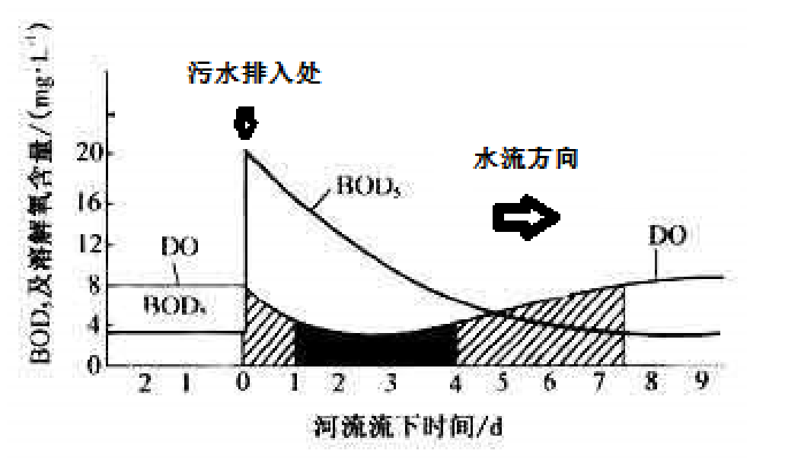图6 生化需氧量（BOD）和溶解氧（DO）的变化曲线
A．大于； B. 小于； C．等于； D．无法判断。
【分析】DO 最低点位置与污水排放点的距离受温度影响。夏季水温高，微生物代谢速率加快，有机物分解更快，DO 消耗速率增加，DO 最低点更靠近污水排放点；冬季水温低，分解速率减缓，DO 最低点位置下游移。因此，夏季 DO 最低点与排放点的距离小于冬季。
学术拓展：河流自净过程
河流自净是指河流在受到污染（如污水排放）后，通过物理、化学和生物过程逐步恢复水质的能力。在图13的溪流生态系统中，结合溶解氧（DO）和生化需氧量（BOD）的变化，可以划分为五个区域（A-E），并通过生物相的变化反映水质状况：
- 污染区（B 区）：污水排放导致有机物浓度升高，需氧细菌大量繁殖，分解有机物，消耗水中溶解氧。BOD 达到峰值，DO 降至最低，鱼类和大型无脊椎动物因缺氧减少，耐污物种）占主导。
- 降解区（C 区）：随水流下游，有机物逐步被分解，BOD 逐渐下降，DO 开始回升。此时，耐污物种减少，适应中度污染的物种（如某些底栖无脊椎动物）增多。
- 恢复区（D 区）：有机物进一步降解，BOD 显著降低，DO 继续升高，水质改善，敏感物种重新出现，生物多样性增加。
- 清洁区（E 区）：BOD 恢复至背景水平，DO 接近饱和，生态系统恢复正常，鱼类和大型无脊椎动物种类丰富，反映水质良好。
其中，BOD是反映水中可被微生物分解的有机物量。污染区 BOD 最高，随河流自净逐步下降；溶解氧DO是水生生物生存的关键指标。污染区 DO 最低，因需氧细菌消耗氧气；随自净进程，DO 逐渐回升。在这一过程中，生物群落随水质变化而演替。污染区以耐污物种为主，恢复区和清洁区逐渐出现敏感物种，生物多样性增加。
Q2. [B]如果测定水中的氧化还原电位，最低的区域可能是（ ）。
A. A 区； B. C 区； C. D 区； D. B 区。
【讨论】氧化还原电位（ORP），是用来反映水溶液中所有物质表现出来的宏观氧化还原性的指标。氧化还原电位越高，氧化性越强，氧化还原电位越低，还原性越强。电位为正表示溶液显示出一定的氧化性，为负则表示溶液显示出一定的还原性。其影响因素如下：
| 影响因素 | 具体作用与机制 |
|---|---|
| 溶解氧浓度 | 高溶解氧促进氧化反应，提高ORP；低氧或厌氧环境利于还原反应，降低ORP。 |
| 有机物含量 | 有机物作为还原剂，增加还原性，降低ORP；富有机物水体（如污水）常呈低ORP。 |
| pH值 | 酸性环境（低pH）提高ORP，因H⁺促进氧化；碱性环境可能降低ORP。 |
| 温度 | 温度升高加速反应，略提高ORP，具体效应依反应体系而定。 |
| 离子浓度与种类 | 氧化性离子（如Fe³⁺、Cl⁻）提高ORP，还原性离子（如Fe²⁺、S²⁻）降低ORP。 |
| 微生物活动 | 微生物代谢（如硫酸盐还原菌）产生还原性物质（如H₂S），降低ORP。 |
| 水体扰动与光照 | 水流、搅拌增加溶氧，提高ORP；光照促光合作用产氧，间接提高ORP。 |
| 化学污染物 | 氧化性污染物（如氯气、臭氧）提高ORP；还原性污染物（如亚硫酸盐）降低ORP。 |
Q3. [B]如果研究溪流中溶解氧水平与大型无脊椎动物物种丰富度的关系，选择（ ）作为对照区域最为合适。
A. A 区； B. C 区； C. D 区； D. E 区。
【讨论】显然，这是对照组。
Q4. [B]E 区成鱼中持久性污染物的含量高于蜉蝣中，这一现象称为（ ）。
A. 生物富集； B. 生物积累； C. 生物放大； D. 无法确定。
【讨论】概念界定：
生物放大（biomagnification）：在生态系统的同一食物链上，由于高营养级生物以低营养级生物为食物，某些元素或难分解化合物在其机体中的浓度随着营养级的提高而逐步增大的现象，其对象是一个食物链；
生物积累（bioaccumulation）：生物在其整个代谢活跃期内都在通过吸收、吸附、吞食等各种过程，从周围环境中蓄积某种元素或难分解化合物，以致随着生物生长发育，浓缩系数不断增大的现象，其对象是一个生物个体；
生物富集(或生物浓缩，bioconcentration)：生物机体或处于同一营养级上的许多生物种群，从周围环境中蓄积某种元素或难分解化合物，使生物机体内该物质的浓度超过环境中的浓度的现象，其对象是生物种群。
Q5. [B]与夏季相比，冬季进行水体中物种丰富度的调查，可能会有如下结果（ ）。
A. 冷水将含有更多的溶解氧，这可能会增加物种的数量；
B. 冷水将含有更少的溶解氧，这可能会减少物种的数量；
C. 冷水可能低于某些生物的耐受范围，这可能会减少物种的数量；
D. 低光照水平会降低植物的光合作用，这可能会减少物种的数量。
【讨论】水温越低，溶解氧越多；CD显然。
Q6. [B]水体中引发富营养化的元素主要是（ ）。
A. 碳； B. 氮； C. 氧； D. 磷。
【讨论】常识题。富营养化是一种氮、磷等植物营养物质含量过多所引起的水质污染现象。
Q7. [B]水体中引发水俣病和骨痛病的主要元素分别是（ ）。
A. 铅； B. 镉； C. 汞； D. 铬。
【讨论】常识题。
| 地方病 | 症状 | 相关元素 |
|---|---|---|
| 骨痛病 | 人体丧失吸收磷和钙的能力 | 镉中毒 |
| 水俣病 | 感觉障碍，中心性视野缩小，高频域听力障碍及运动失调 | 汞中毒 |
| 矮人病 | 慢性骨关节病变 | 钙和锶元素的缺乏 |
| 克山病 | 心肌损伤引起血液循环障碍 | 可能与硒元素缺乏有关 |
| 甲状腺机能亢进 | 甲状腺肿大 | 碘缺乏 |
| 氟地方病 | 有氟缺乏病变和氟中毒病变 | 氟中毒或缺失 |
表1 几种常见的地方病与元素的关系
Q8. [B]地球上河流与小溪总水量约占地球总水量的（ ）。
A. 2.59%； B. 0.59%； C. 0.007%； D. 0.0001%。
【讨论】河流与小溪总水量是占地球总水量最少的。什么水储库都能干翻它。
| 水分类型 | 水储量/km³ | 占水圈总水量/% | 占淡水总储量/% |
|---|---|---|---|
| 生物水分 | 1 120 | <0.001 | 0.003 |
| 大气水分 | 12 900 | 0.001 | 0.04 |
| 淡水湖 | 91 000 | 0.007 | 0.26 |
| 咸水湖 | 85 400 | 0.006 | - |
| 河川水 | 2 120 | <0.001 | 0.006 |
| 陆地水分 | 11 470 | 0.001 | 0.03 |
| 沼泽水 | 16 500 | 0.01 | 0.05 |
| 地下水 | 23 400 000 | 1.688 | - |
| –其中：地下淡水 | 10 530 000 | 0.760 | 30.10 |
| –其中：地下咸水 | 12 870 000 | 0.928 | - |
| 冰川和永久积雪固结水 | 24 064 100 | 1.736 | 68.70 |
| 永久冻土的地下水 | 300 000 | 0.022 | 0.86 |
| 海洋水 | 1 338 000 000 | 96.538 | - |
| 水圈总水量 | 1 386 000 000 | 100.00 | - |
| 其它总淡水储量 | 35 029 210 | 2.528 | 100.00 |
表2 地球表面水分类型及其质量构成（赵烨，2015: 79）
Q9-Q16 北极食物网 14分
在生态系统中，各食物链之间可以相互交错，形成复杂的网状食物关系，称为食物网。自然界中普遍存在的食物网，不仅维系着一个生态系统的平衡和自我调节能力，而且推动着有机界的进化。题图 14 是一个北极食物网，请据此回答下面 Q9-Q16 问题。

题图14 北极食物网
Q9. [B]图中三级消费者是（ ）。
A. 北鳕； B. 环斑海豹； C. 北极熊； D. 虎鲸。
【讨论】食物链：生产者→初级消费者→次级消费者→三级消费者→四级消费者
| 路径序号 | 生产者 | 初级消费者 | 次级消费者 | 三级消费者 | 四级消费者 |
|---|---|---|---|---|---|
| 1 | 硅藻 | 磷虾 | 北鳕 | 虎鲸 | |
| 2 | 硅藻 | 磷虾 | 北鳕 | 北极熊 | 虎鲸 |
| 3 | 硅藻 | 磷虾 | 北鳕 | 环斑海豹 | 北极熊 |
| 4 | 硅藻 | 磷虾 | 北鳕 | 环斑海豹 | 虎鲸 |
| 5 | 硅藻 | 磷虾 | 环斑海豹 | 北极熊 | 虎鲸 |
| 6 | 硅藻 | 磷虾 | 环斑海豹 | 虎鲸 |
在不同的食物链路径中，同一种生物可以有不同的身份。遍历所有路径，只有北鳕不能当三级消费者。
Q10. [B]图中能量在沿各个营养级顺序向前传递时，每一级为下一级提供的能量大约为固有能量的（ ）。
A. 50%； B. 30%； C. 10%； D. 5%。
【讨论】美国生态学家Lindeman对一个结构相对简单的天然湖泊——赛达伯格（Cedar Bog）湖的能量流动进行了定量分析。他指出：
生态系统中能量流动是单向的。在生态系统中，能量流动只能从第一营养级流向第二营养级，再依次流向后面的各个营养级，不可逆转，也不能循环流动。
能量在流动过程中逐级递减。输入到一个营养级的能量不可能百分之百地流入下一个营养级，能量在沿食物 链流动的过程中是逐级减少的。一般来说，在输入到某一个营养级的能量中，只有10%-20%的能量能够流到下一个营养级，也就是说，能量在相邻两个营养级间的传递效率是10%-20%。在一个生态系统中，营养级越多，在能量流动过程中消耗的能量就越多。因此，生态系统中的能量流动一般不超过5个营养级（这也就是Q9没有五级消费者的原因。）（朱正威、赵占良，2019: 56-57）。
学术拓展：林德曼是怎么测量能量流动的？
林德曼和妻子在Cedar Bog进行了广泛的采样，覆盖了水生植物、浮游生物、底栖动物和鱼类等。他们使用了一种叫“Birge-Ekman取样器”的工具，专门采集湖底的泥沙和生物。这台设备像一个铁制框架，底部有铲子可以抓取泥沙，上方有网兜收集浮游生物。此外，他们还用细密的丝网过滤100升湖水来采集浮游生物，并通过季节性观察估算水生植物的生物量。
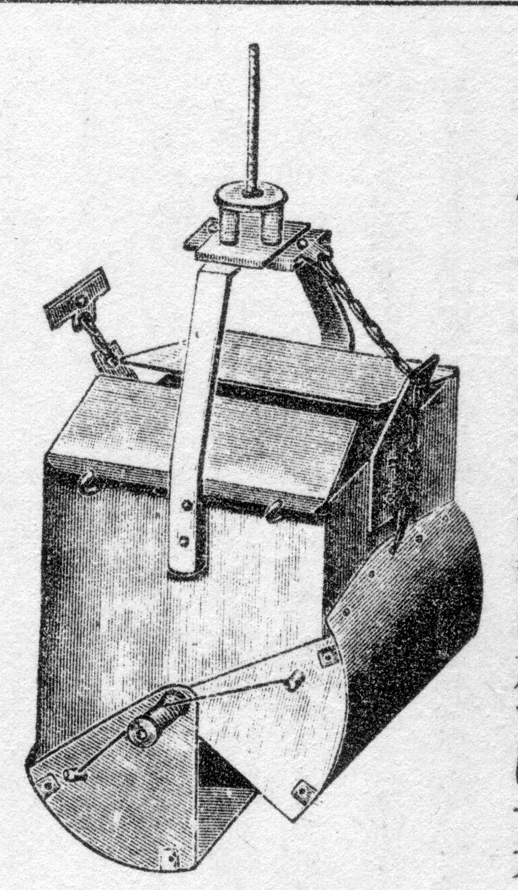图7 Birge-Ekman取样器
采集到的样本需要称重，但林德曼选择测量湿重而非干重。因为干重会因昆虫外壳等成分引入误差，而湿重更能反映生物的真实生物量。样本会被离心3分钟去除表面水分，然后用天平精确称重。这些数据为后续的能量计算奠定了基础。
接着，林德曼将生物的湿重按营养成分转化为能量。他假设生物体主要由碳水化合物（4100 cal/g）、蛋白质（5650 cal/g）和脂肪（9450 cal/g）组成，并为不同生物群（如浮游植物、底栖捕食者）制定了特定的换算因子。例如，林德曼在1938年8月15日测得其湿重为300 g/m²，乘以淡水水生植物的换算因子0.0350，得到能量值为10.50 cal/cm²。通过这种方式，他将各种生物的生物量转化为统一的能量单位，为比较不同营养级提供了依据。
有了能量数据，林德曼进一步计算了生物的“生产力”，即单位时间内生物群的产量。他通过定期采样，跟踪生物量随时间的变化，计算生长速率和死亡速率。净增长率（生长速率减去死亡速率）乘以生物量，就得到了生产力。例如，淡水水生植物在8月15日的能量值（10.50 cal/cm²）被视为其年生产力的近似值，因为这是一年生植物的成熟期高峰。林德曼还根据食物链将生物分为生产者（如浮游植物）、初级消费者（如食草浮游动物）和消费者（如鱼类），比较它们的年生产力，发现能量在营养级间逐级递减，比例约为10%~20%，这就是上面两个结论的由来。
林德曼的研究不仅揭示了能量流动的规律，还为生态学带来了深远的影响。他的营养动力学概念强调，生态系统的运行可以用能量流动来量化，这为后来的生态学研究提供了理论框架。他的工作还启发了我们对生态系统演替的理解，表明短期营养关系与长期群落变化紧密相连。更令人感慨的是，林德曼在27岁因肝病去世前，完成了这项开创性工作。他的论文发表时，他已去世，林德曼的合作者哈钦森在附录中写道：“我们第一次以一种富有成效的抽象分析的形式，呈现了生物群落之间的相互关联。” 这篇论文不仅是一个科学成果，更是一个年轻科学家对生态学的热爱与奉献。（Lindeman, 1942；Cook, 1977；李志鹏等，2024）
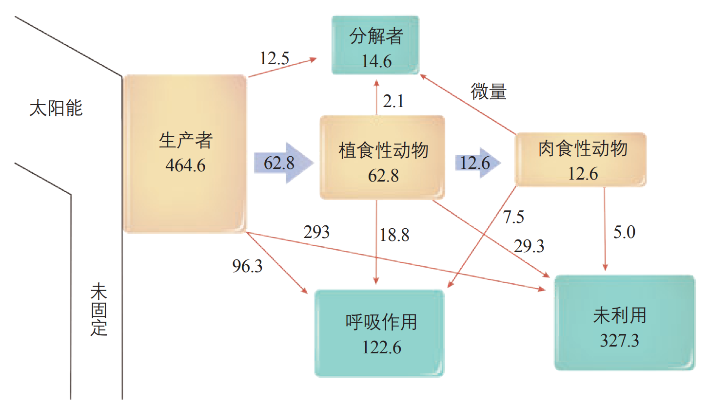图8 赛达伯格湖的能量流动图解 图中数字为能量数值， 单位是（焦每平方厘米年）。图中 “未固定”是指未被固定的太阳能，“未利用” 是指未被自身呼吸作用消耗，也未被后一个营养级和分解者利用的能量。为研究方便起见， 这里将肉食性动物作为一个整体看待（朱正威、赵占良，2019: 56）。
Q11. [B]硅藻的能量来源于（ ）。
A. 土壤；B. 水体；C. 微生物；D. 太阳。
【讨论】显然。
It has not escaped our notice that, 硅藻不吃微生物。
Q12. [B]虎鲸中持久性污染物的含量高于环斑海豹，这一现象称为（ ）。
A. 生物富集；B. 生物积累；C. 生物放大；D. 无法确定。
【讨论】同Q4。
Q13. [B]环纹海豹是北极熊的首选猎物，它们会到海冰的洞穴呼吸。夏季海冰数量的减少，对北极熊狩猎的影响可能是（ ）。
A. 狩猎场面积增大，北极熊更易获得食物；
B. 狩猎场面积减少，北极熊更难获得食物；
C. 狩猎场距离增大，北极熊更易获得食物；
D. 生理性压力增大，北极熊更难获得食物。
【讨论】显然。另外，”生理性压力”貌似是命题人自创的术语（？）。
Q14. [B]海冰融化将导致如下结果（ ）。
A. 海冰融化导致水面吸收太阳能量增多；
B. 海冰融化导致水面吸收太阳能量减少；
C. 与北极变暖形成正反馈回路；
D. 与北极变暖形成负反馈回路。
【讨论】本题的实质是冰-反照率正反馈。
在系统中，反馈是耦合的集合，包括两种类型：
负反馈（negative feedback）使得系统朝向稳定的平衡状态演化。它的作用是通过一定的抵抗力，抑制系统的变化。当系统发生变化时，负反馈机制会产生反作用力，抵消或减弱这种变化，使系统恢复到稳定状态。
正反馈（positive feedback）建立的是不稳定的平衡状态。正反馈机制会使系统的变化持续并加剧，而不是抑制它。当系统发生变化时，正反馈机制会促进这种变化，导致系统无法稳定下来，最终系统会进入一个新的状态。

图9 气候反馈概念示意（Zhao et al., 2021）
冰-反照率正反馈的原理是：温室气体浓度的增加使地球气候变暖，雪和冰就会开始融化。 雪和冰融化后，原来藏在雪和冰下面的深色的地面和水面露了出来，这些深色的表面吸收更多的太阳热量，就会造成进一步增温，进而又造成更多的雪、冰融化，周而复始，愈演愈烈。这可以用下图示意。
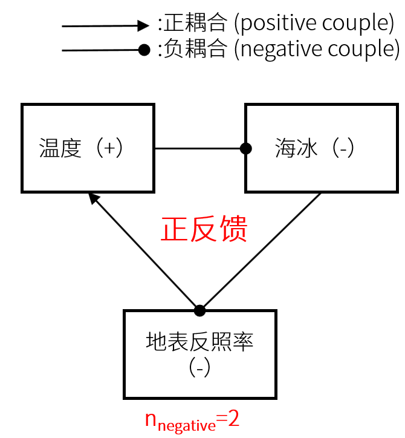图10 冰-反照率反馈图解，由笔者自绘
这里做几点说明：
反馈循环的正负由系统中所有耦合关系的符号累积决定：
- 每个正耦合对反馈的符号贡献为“+1”（保持符号不变）。
- 每个负耦合对反馈的符号贡献为“-1”（改变符号）。
- 反馈循环的最终性质取决于符号变化的累计效应：
- 如果负耦合的个数为奇数，符号变化奇数次，整体反馈为负反馈（抑制作用，相当于一个反相器）。
- 如果负耦合的个数为偶数，符号变化偶数次，整体反馈为正反馈（放大作用，相当于一个放大器，比如本例）。
欲了解更多有关系统与耦合的原理，可参阅《地球系统》（高等教育出版社，2012）。
Q15. [B]生态系统的基本功能是（ ）。
A. 生命演化； B. 能量流动； C. 物质循环； D. 信息传递。
【讨论】生态系统的基本功能是能量流动、物质循环与信息传递。生命演化是生物自己的事情。
概念辨析：
能量流动：生态系统中能量的输入、传递、 转化和散失的过程。
物质循环：组成生物体的碳、氢、氧、氮、磷、硫等元素，都在不断进行着从非生物环境到生物群落，又从生物群落到非生物环境的循环过程，也即生物地球化学循环（biogeochemical cycle）。
信息传递：生态系统中的生物种群之间，以及它们内部的信息的产生与交换。
更多阅读：普通高中教科书 生物学 选择性必修 2 生物与环境：第 3 章 生态系统及其稳定性（人民教育出版社2019年版）。高二选生物的同学会对这一题目很熟悉，正确选项分别构成了3.2、3.3、3.4节的讨论内容。
Q16. [B]碳是生命物质的主要元素之一，在地球几大碳库中，最大的是（ ）。
A. 大气圈碳库； B. 水圈碳库； C. 生物圈碳库； D. 岩石圈碳库。
【讨论】常识题。岩石圈碳库主要以碳酸盐岩（如石灰岩）和有机碳（如化石燃料）形式存在，储量巨大，约占地球总碳量的99.9%以上（Ciais et al., 2013）。远超大气圈、生物圈和水圈碳库。
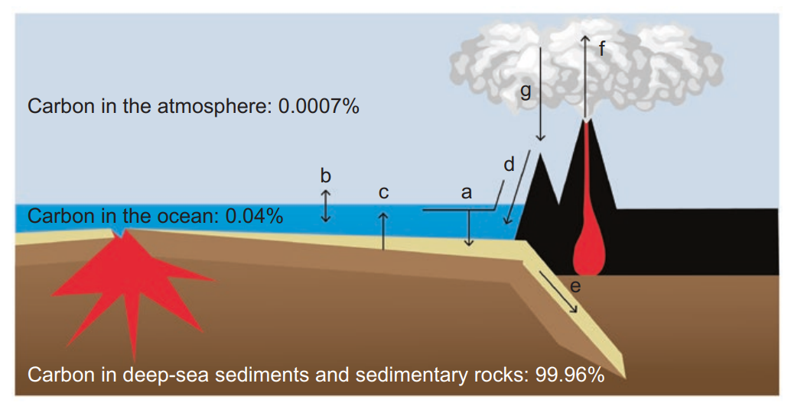图11 当前地球系统外部圈层的主要碳库及通量，注意到深海沉积物和沉积岩中的碳占了99.96%：a——海洋与陆源碎屑沉积；b——海气二氧化碳交换；c——生物碎屑沉积与海水间碳交换；d——陆地岩石风化作用及其与大洋的物质交换；e——大洋沉积物随板块俯冲进入地幔；f——火山喷发；g——大气降水。Licensed under CC BY-SA 4.0 by Philippe Bertrand, Louis Legendre and Mohamed Khamla.
Q17-Q23 青藏高原 17分
青藏高原位于中国的西南部，介于北纬 26°00′39°47′，东经 73°19′104°47′之间。它南起喜马拉雅山脉南缘，北至昆仑山、阿尔金山脉和祁连山北缘，西部为帕米尔高原和喀喇昆仑山脉，东及东北部与秦岭山脉西段和黄土高原相接。青藏高原的总面积约 250 万平方千米，东西长约 2800 千米，南北宽约 300~1500 千米，是中国最大、世界海拔最高的高原，被称为“世界屋脊”、“第三极”（题图 15）。以下 Q17-Q23 各题与青藏高原有关。

题图15 青藏高原
Q17. [G]以下关于青藏高原隆升说法正确的是（ ）。
A. 印-亚大陆碰撞及印度大陆俯冲约在 65~41 Ma；
B. 太-亚大陆碰撞及太平洋大陆俯冲约在 65~41 Ma；
C. 青藏高原隆升至 2000m 以上时对西风产生有效屏障；
D. 板块会聚速率突然降低被指大陆碰撞结束时代。
【讨论】B的构造背景描述无关，时间更是错误。

图12 晚侏罗世以来西太平洋板块俯冲演化过程（朱日祥、徐义刚，2019）
非常好的图件！建议学有余力的同学拿原文来读一下。
Q18. [G]关于青藏高原隆升地质证据说法正确的是（ ）。
A. 地层倾角变化表明区域褶皱变形产生时期；
B. 沉积地层产状平缓，变形微弱，表明地壳缩短增厚；
C. 造山作用自北向南相继变年老；
D. 出现大量浅海灰岩沉积岩。
【讨论】
- A直接反映挤压应力背景；
- B错。区域地层因挤压而强烈变形，产状平缓、变形微弱反而表明该区域可能未经历显著隆升或构造活动；
- C：造山过程应该是自南向北逐步推进，所以南部是更加活跃的造山带，可以理解为北部的山体被“推覆”过去了。但是界定“造山作用”的年轻与年老并没有一个明确的指标，所以这个选项的正误存疑。
- D说明青藏高原各大地块遭受隆升。
Q19. [G]青藏高原隆升过程的内动力地质作用包含（ ）。
A. 地壳运动； B. 岩浆作用； C. 沉积作用； D. 变质作用。
【讨论】C是外动力地质作用；B选项的岩浆作用更典型于陆地火山弧（如俯冲带），而青藏高原是大陆碰撞造山，而非洋壳俯冲，因此缺乏大规模的岩浆活动。
此外，题目问的是“隆升过程的内动力地质作用”，暗示重点是直接驱动隆升的核心过程，包括提供构造应力的地壳运动（A），以及反映了深部岩石的响应的变质作用（D）。
Q20. [G]青藏高原及周缘地区断层发育，在高原面以下，下列哪些断层性质为主（ ）。
A. 逆冲型； B. 走滑型； C. 正断型； D. 逆冲兼走滑型。
【讨论】
- 正断层形成于拉张应力环境，断层面倾角较大，表现为地壳伸展，而不是挤压；
- 青藏高原的最大主应力（σ₁）近南北向，板块碰撞产生的挤压应力方向主导下，逆冲断层多发育（倾角多小于30°）（见W6的讨论）
- 青藏高原隆升过程中，印度板块的斜向碰撞导致应力场既有挤压（逆冲）又有剪切（走滑）分量。高原面以下，许多断层表现出逆冲和走滑的复合特征，如昆仑山断裂带既有逆冲分量又有走滑分量，但高原面以下深部区域以挤压为主，走滑断层不是主导类型，单独选择不合适。（姚华建、尹九洵，2015）
Q21. [G]青藏高原及周缘常见自然灾害有（ ）。
A. 地震； B. 地面隆起； C. 泥石流； D.雪崩。
Q22. [G]与青藏高原隆升密切相关的山脉有（ ）。
A. 喜马拉雅山脉； B. 横断山脉； C. 昆仑山脉； D. 天山山脉。
【讨论】天山山脉位于青藏高原西北方向，远离碰撞带，主要受远距离应力传递和塔里木盆地与准噶尔盆地的挤压作用影响。
Q23. [G]青藏高原地区修建大型水库，针对水库蓄水说法不正确的是（ ）。
A. 增加地壳压力有利于断层带应力平衡，不利于产生地震；
B. 增加岸坡侧向压力有利于岸坡稳定；
C. 对岸坡冲刷和浸泡作用易于引发滑坡等地质灾害；
D. 对周边的气温和降水产生影响。
【讨论】这些都是三峡工程后出现的问题。随着蓄水水位的增加，库区岩石区域构造应力场岩体断块重力能将随水位的增加能量增强，积累到一定程度以地震的形式释放（陈敏等，2007）。
Q24-Q29 冰期与暖期 8分
冰期（Ice Age）是指地球表面和大气温度长期下降的时期，导致大陆冰川、极地冰盖或者高山冰川长期存在或发生扩张。目前认为，在漫长的地质历史时期，地球的气候在冰室期（ice house）和温室期（warm house）之间交替(题图 16)。冰室期中出现的间歇性温暖期被称为间冰期。据此回答下面 Q24-Q29题。

题图 16 显生宙温度变化曲线。蓝色矩形指示最大纬度冰范围，黑线表示中位数，橙色虚线指示显生宙五次生物大灭绝的时间。GMST-全球平均表面温度（据 Judd et al., 2024）
Q24. [E]地质历史上完全没有出现冰期的时代是（ ）。
A. 奥陶纪； B. 白垩纪； C. 第四纪； D. 志留纪。
【讨论】考生熟记地质年代表及其代号即可作答。
奥陶纪 O Ordovician 485-445 Ma；
白垩纪 K Cretaceous 145-66 Ma；
第四纪 Q Quaternary 2.56Ma至今，即图16最右侧部分；
志留纪 S Silurian 445-410 Ma。
只有白垩纪没有蓝色矩形，GMST＞20℃。
Q25. [E]冰期在沉积或化石记录中保存的证据包括（ ）。
A. 冰碛岩；
B. V 形谷；
C. 生物化石壳体中的氧同位素信息；
D. 适应寒冷环境的生物向低纬度地区迁移的现象。
【讨论】
- A选项的冰碛岩表征冰川活动轨迹；C选项的氧同位素信息（18O/16O）通过同位素分馏记录(δ^18^O)表征温度；D选项表征高纬度更加冷。
- B选项的V形谷是河流下蚀的产物，与冰期无关。事实上这反而说明河流的流动性好，不处于冰期。
稳定同位素地球化学、同位素分馏的相关知识将在W14-W20题中介绍。
Q26. [E]雪球地球（Snowball Earth）被认为是地质历史上最严酷、最极端的一次地质和古气候事件，它的发生、发展和结束改变了地球海洋和大气的物理化学条件。关于雪球地球期间的生命活动表述，下列错误的是（ ）。
A. 雪球地球期间，全球冰封，生命活动终止。只有等雪球融化，生命活动才能重新启动；
B. 在冰裂缝、火山喷口以及海底热液活动区域，还存在局部的开放环境，生命可以存活；
C. 雪球地球期间，存在生物的避难所，使得生命可以延续；
D. 雪球地球期间，应该有原核生物和少量真核生物存活。
【讨论】
20年前，哈佛大学P.F.Hoffman教授提出“雪球地球”假设，认为新元古代距今7亿年前后出现过从两极到赤道全部被冰覆盖的局面（Hoffman et al.，1998）。证据是冰碛物的地理分布：根据古地磁分析再造古大陆的位置，发现冰碛物的分布到了当时的赤道地区。从记录看，“雪球”现象在5.5亿、6.4亿和7.5亿年前后都曾经出现过（汪品先等，2018）。
雪球地球的诱因多种多样，比如太阳活动的暂时减弱（更多讨论可以参见 Faint Young Sun Paradox）或者是超大陆在降水充沛的低纬度的聚集促进了硅酸盐的风化，从而将CO₂以碳酸盐的形式固定（参见Q45的讨论）。这种对大气CO₂的消耗减缓了温室效应，导致地表温度下降。超大陆的存在也促进了大陆性气候的发展，使得冬季更加寒冷，导致了冰盖向低纬扩张。冰面是白色的，会反射更多的太阳能量（增加反照率），从而进一步降低温度，导致冰盖规模扩大，如此循环。粗略地说，这就是一个全球尺度上的冰-反照率正循环（参见Q14的讨论）。
然而，“雪球地球”并非稳定状态。实际上，在冰盖之下，**硅酸盐的风化作用无法进行，随之停止的还有大气CO₂以碳酸盐形式的固定。但火山仍在持续释放CO₂到大气中，由于缺乏固定机制，CO₂不断积累。温室效应随之增强，地球重新变暖，冰盖融化，冰川期不可避免地结束。**冰盖一旦消融，新暴露的陆地再次经历硅酸盐风化，导致大气中积累的大量CO₂被迅速固定为碳酸盐。这就是为什么每次重大冰川期后都会立即形成厚厚的碳酸盐沉积层（Gargaud et al., 2012）。
回到我们的题目：
对于B选项：近年来的数值模拟研究指出，冰裂缝、火山喷口及海底热液活动区域可能形成未被完全冰封的开放水域（Campbell et al., 2014）。例如，在狭窄海峡附近，地热活动或火山喷发可维持液态水，并通过热液喷口提供化学合成所需的能量与微量元素（如Co、Ni），支撑微生物群落的生存（Long et al., 2019）。
对于C选项：Campbell等提出，近封闭海域可能因冰川入侵受限而形成局部液态水域，同时火山活动区的热量输入与冰裂缝透光环境可为光合生物（如蓝藻）提供庇护。类似地，Long等强调火山喷发不仅释放营养元素，还通过热液循环维持了稳定的温压条件，成为低复杂度生命的避难空间。
对于D选项：分子化石与地质记录表明，原核生物（如嗜极细菌和古菌）凭借耐极端环境能力在冰下广泛存活，而真核生物（如微藻）因依赖复杂代谢仅少量存续（Long et al., 2019）。Campbell等（2014）进一步推测，赤道附近“软雪球”模型中可能残存开放水域，为真核生物提供有限生存机会。同时，Song等提出，甚至在中纬度地区也有充分的古生物记录证明，在雪球地球时期的其中一个冰期，陆缘海区域的生源环境能支撑浮游生物的生存（Song et al., 2023）。这些发现共同表明，雪球地球并非完全“生命禁区”，局域环境与生物适应性为寒武纪生命大爆发奠定了基础。
题干要求选错误选项，所以只有A正确。
学术拓展：硬雪球与软雪球
“雪球地球”假设的提出和发展并非一帆风顺。事实上Hoffman提出这个假设时就引起了世纪之交国际学术界的轰动和争论。即便在“雪球派”的内部，也还有软雪球和硬雪球之争：硬雪球”主张连赤道都被冰覆盖，但是这样的地球能不能支持生命的延续，变成了问题；“软雪球”认为赤道区还留有无冰的间隙，可供生物“避难”（汪品先等，2018）。
“硬雪球地球”假说认为，在雪球地球事件期间，整个地球表面都被冰封，形成一个完全冻结的雪球。这一假说得到了一些地质证据的支持，如全球广泛分布的冰川沉积物，以及碳同位素比率的快速变化。
“软雪球地球”假说认为，虽然大部分地球表面被冰层覆盖，但这种覆盖并不是简单的、均匀的冰层，而是包含了复杂的冰川地貌，如冰盖、冰架、冰山等，其中有些地方可能存在开阔水域，这些区域可能由于地热活动、火山喷发或海洋环流等因素保持了液态水的存在，从而为生物的延续提供了重要的生存窗口。
类似题目
笔者曾经（2024年9月）命制过与雪球地球相关的题目，现放出以飨读者：
距今7亿至6亿年前，地球发生过两次极为漫长的冰冻事件，分别是新元古代的斯图特冰期和马里诺冰期。这两次事件中，地球表层冰盖迅速扩张至低纬度赤道地区，形成了全球冰封的局面，这就是著名的“雪球地球”时期。针对这一问题，学术界有两种观点，即当时的地球是处于“硬雪球”还是“软雪球”状态，也就是说地球到底是不是彻底被冰川覆盖。结合材料与所学知识，回答下面问题。

图S26-a “软”雪球的生物地球化学模型
注：POP：颗粒有机磷；DOP：溶解的有机磷（修改自Gianchandani et al., 2024）

图S26-b 地球偏心率与气温年较差的关系
注：令黄赤交角为24.5°，进动角为180°，CO2分压为1bar。红色曲线表征“软雪球”状态，蓝色曲线表征“硬雪球”状态。（修改自Liu et al., 2020）
S26-1. （这道题目其实是从2022年决赛修改过来的）“雪球地球”可能的成因有（ ）。
A. 冰雪反照率高，形成大量冰川，海平面下降，陆地增加，进一步增加反照率；
B. 蓝藻发育出分解水及释放氧气的能力，使大气中甲烷减少，温室效应被破坏；
C. 根据米兰科维奇旋回，当岁差最大且南半球离太阳最近时，北半球温度达最低；
D. 火山喷发导致陆地面积增加，大陆的硅酸岩风化加强，导致大量CO2被吸收。
S26-2. 当含Fe²⁺的水与含氧水相遇时，会生成Fe3+，沉降到海床上。这些沉降物质包括铁氧化物、铁碳酸盐矿物、铁硅酸盐矿物和硫化物，构成了条带状铁构造(BIFs, Banded Iron Formations)。现代同位素测年技术表明，大部分的BIFs形成于3.6-1.8Ga前的太古宙—古元古代时期，其间的大氧化事件（GOE）增加了海水中的氧含量，与蓝藻的产氧光化学作用一起构成了这些BIFs。近年来科学家发现了距今1000-540Ma的“雪球地球”时期形成的BIFs，且多分布在陆缘区域。有鉴于此，你认为下面对“雪球地球”时期形成的BIFs论述正确的有（ ）。
A. 海洋中的Fe²⁺主要通过吸收紫外线辐射氧化形成BIFs；
B. 较低的磷酸盐浓度（约为现今的3%）通过限制初级生产力维持了Fe²⁺量的恒定；
C. 藻类在未被冰覆盖的区域进行光合作用，产氧以氧化Fe²⁺形成BIFs；
D. 这一时期的BIFs主要形成于被动大陆边缘浪基面之下稳定平缓的大陆架上。
S26-3. 图S26-b显示，当逐渐增大偏心率的时候，赤道附近的气温年较差会显著增大。已知，若一地的气温年较差过大，会出现沙楔(sand wedge)。地质学家在古赤道附近发现了约在6.35亿年前形成的沙楔。那么这些沙楔可能的形成原因有（ ）。
A. 大于54°的地轴倾角使得赤道气温年较差较大；
B. 接近1的地球公转轨道偏心率使得赤道气温年较差较大；
C. 沙楔原形成于高纬度地区，由板块运动带到赤道附近；
D. “硬雪球”降低了地表热容量，使得赤道气温年较差较大。
S26-4. 尽管“雪球地球”时期的海洋底部存在贫氧-缺氧的条件，但在北半球中纬度地区，上层水体依然存在活跃的有氧氮循环，其可能原因有（ ）。
A. 富含氧元素和氮元素的干酪根促进了有氧氮循环；
B. 北半球中纬度地区冰川广布，海底缺少固氮生物；
C. 板块运动使得北半球中纬度地区岩浆喷出融化表层冰盖，提高其初级生产力；
D. 地幔热流使得部分中低纬度的海域保持开放，浮游生物参与到有氧氮循环中。
参考答案：ACD; BCD; BD; CD。
【讨论】
S26-1：
B选项： “雪球地球”指的是全球冰封的局面。若“雪球地球”符合米兰科维奇旋回规律，则随着地轴的进动（岁差），只会有半个地球因离太阳较远而冰封，显然不符合题意。

图13 米兰科维奇旋回，取自笔者的PPT。周期性的冰盖增减无法解释整个地球都变成雪球。
S26-2：
**A选项：**如果海洋能够吸收紫外线辐射，则符合图a的模型。虽然简单溶液成分条件下溶解的二价铁吸收紫外线辐射，便可以通过光化学反应氧化，但据图分析，旺盛的初级生产力进行产氧光合作用，才是主要的原因。A选项错误。
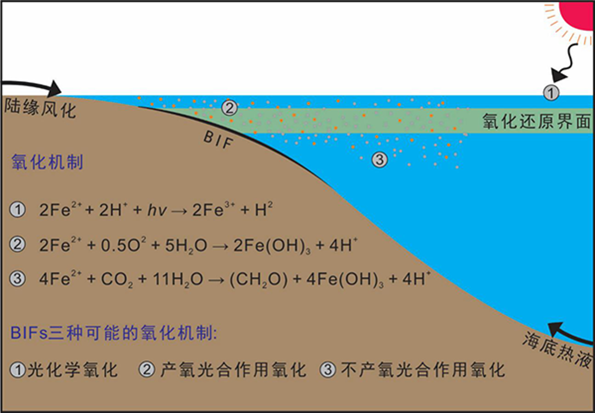图14 条带状铁建造(BIFs)的可能氧化机制。反应1，光化学氧化；反应2，产氧光合作用氧化；反应3，不产氧光合作用氧化。
图片来源：http://www.cjxb.ac.cn/news/cjzs/f75859a7-1d02-4ab2-a3db-44c255e26093.htm. 原作者版权所有。
B选项：海水中的磷酸盐会影响初级生产力和有机质的沉积。磷酸盐浓度过低会限制浮游植物的生长，减少海洋中有机物的生产与沉积，而这些有机物在分解过程中会消耗氧气。如果有机物的沉积和分解减少，氧气的消耗也会减少，从而维持缺氧的环境。
当海洋中的氧气浓度低时，磷的再生效率提高。这意味着缺氧的环境会导致沉积物中的磷再次释放到水体中。然而，如果初始磷酸盐浓度较低，磷的再生效应相对较小，浮游植物的生产仍然会受到抑制。因此，较低的磷酸盐浓度通过限制有机质的生成，间接维持了缺氧的条件。
**C选项：**观察图S26-a可得。
**D选项：**根据材料信息，沉积铁由海底热液喷口和厌氧菌提供游离态的Fe^2+^，而氧气溶解于表层海水，与铁氧化菌反应，将沉积铁升价还原成三价铁离子。但是，这一结论是从材料中推知的，从另外一个视角来分析，海深较小的大陆架真的能形成一个氧化还原分层的环境，以保证沉积的BIFs不被还原吗？考虑到材料有限，这里D也对（这是笔者的问题hhh）。
S26-3：
| 选项 | 分析 | 结论 |
|---|---|---|
| A | 当地轴倾角大于54°时，赤道的气温年较差将大于两极地区。一般认为地轴倾角由月球的引力决定，“雪球地球”时期已有月球，故地轴倾角相对稳定，不会到54°这么大。 | A项错误 |
| B | 偏心率越大，圆锥曲线越接近准线，简而言之就是轨道越扁，这样远日点离太阳焦点更远，使得赤道气温年较差较大。 | B项正确 |
| C | 材料指出“地质学家在古赤道附近发现了约在6.35亿年前形成的沙楔”，也就是说沙楔的位置在6.35亿年前的赤道附近。 | C项错误 |
| D | 据图b，软雪球中赤道附近的季节性温差即使在大的偏心率下也不会超过20摄氏度。这是由于其热带地区比较温暖湿润，地表的热容量较大，在季节尺度上不容易产生大的温度振荡。而硬雪球正好相反。 | D项正确 |
S26-4：
| 选项 | 分析 | 结论 |
|---|---|---|
| A | 干酪根是为蜡状有机物质。是动植物遗骸(通常是藻类或木质植物)在地下深部被细菌分解，除去糖类、脂肪酸及氨基酸后残留下的不溶于有机溶剂的高分子聚合物，密度远大于水，不在上层水体。 | A项错误 |
| B | 若北半球中纬度地区冰川广布，则属于缺氧环境，与题意不符。 | B项错误 |
| C | 板块运动引发的岩浆喷发与地幔热流的共同作用，都可能为“雪球地球”时期的中低纬度海域提供开放水域，允许光合作用和浮游生物的存在，并维持有氧氮循环。岩浆喷发融化冰盖并释放养分，地幔热流则通过大洋中脊为海洋提供持续的热量。这些过程解释了为何在冰层覆盖大部分的地球表面，依然能在中纬度区域观察到有氧的氮循环。（Song et al., 2023） | C项正确 |
| D | 同上 | D项正确 |
Q27. [E]雪球地球之后的地球生物圈发生了翻天覆地的变化，埃迪卡拉系地层中，保存了大量的真核生物。下列不属于当时的真核生物化石的是（ ）。
A. 陡山沱组中保存的大型带刺疑源类；
B. 灯影组中保存的叶状化石；
C. 澄江玉案山组页岩中产出的奇虾化石；
D. 陡山沱组中保存的动物胚胎化石。
【讨论】玉案山组属于下寒武统，比埃迪卡拉纪晚，是寒武纪大爆发时期的产物。所以奇虾化石不属于埃迪卡拉纪（6.35–5.41亿年前），而是寒武纪早期（约5.2亿年）的典型化石（周传明等, 2019）。本题是一个非常冷门的知识点。
Q28. [E]奥陶纪末期的冰期时段，发生了显生宙第一次生物大灭绝事件：全球性海洋动物50%的属，80%的种消失。下列不属于奥陶纪生物的是（ ）。
A. 角石； B. 蕨类； C. 牙形动物； D. 笔石动物。
【讨论】就算是最早的裸蕨，也得等到志留纪才出现。
本题与2024年预赛的B卷Q25题思路类似：
Q25. 以下属于奥陶纪海洋的生物类群组成的有（ ）。
A. 菊石； B. 板足鲎； C. 角石； D. 苔藓虫。
Q29. [E]我们现在处在第四纪冰期时代，2.58Ma 至今，南极大陆与格陵兰岛形成了永久性的冰盖，欧亚大陆北部、北美北部出现了面积广大的大陆冰盖，世界各处高纬度或高海拔地区广泛发育山岳冰川。关于第四纪冰期下列表述错误的是（ ）。
A. 第四纪冰期中也有间冰期存在，表现为大陆冰川面积大规模缩减；
B. 有丰富的地质记录证明了第四纪冰期的存在；
C. 第四纪冰期的发生和构造运动、地球轨道周期等均有一定的关系；
D. 工业革命以来人类活动导致的温室气体升高，不会影响第四纪冰期继续延续下去。
【讨论】这是显然的！近年来的研究认为人为温室气体排放把米兰科维奇旋回导致的第四纪冰期-间冰期循环推迟了数万年，但这一过程可能与低纬反馈过程有关。
拓展阅读：
- Shakun, J., Clark, P., He, F. et al. Global warming preceded by increasing carbon dioxide concentrations during the last deglaciation. Nature 484, 49–54 (2012). https://doi.org/10.1038/nature10915
- 《中国地球系统科学2035发展战略》第三章 水循环及其轨道驱动
Q30-Q32 地质剖面图 6分
题图 17 为某地区的简化地质剖面平面图，从中能够读出的有关相对和绝对地质年代的一些信息。据此回答下面Q30-Q32 问题。
题图 17 某地区的简化地质剖面图
Q30. [G]根据剖面图，我们可以确定图中存在的地质体和地质现象及其演化过程，那么下面说法正确的是（ ）。
A. 本区构造复杂，属于古老的造山带；
B. 该区发育了基底和盖层的结构，现今位于稳定的板块内部；
C. 该区存在海进沉积旋回；
D. 该区存在海退沉积旋回。
【讨论】基底指花岗片麻岩，盖层指缺乏褶皱的沉积岩层，故位于稳定的陆核部位。图示的灰岩（浅海沉积相）到砂岩（滨海沉积相）暗示海退。
Q31. [G]砂岩的形成时代（ ）。
A. 大于花岗片麻岩的形成年龄；B. 小于辉绿岩的形成年龄；
C. 介于花岗片麻岩和辉绿岩形成年龄之间；D. 大于辉绿岩的形成年龄。
【讨论】根据地层层序律即可得到。从严格语法的角度来讲，CD都对。
Q32. [G]碎屑岩的形成时代，根据相对年龄的确定原则，可以确定其形成顺序，然而形成温度低于定年矿物的封闭温度时，难于确定其时代，那么可以根据（）确定图中砂岩形成时代。
A. 磁性地层方法； B. 古生物化石；
C. 碎屑矿物测年可以限定上限年龄；D. 碎屑矿物测年可以限定下限年龄。
【讨论】
- 碎屑岩通常不含足够的磁性矿物，且沉积过程可能受扰动影响，难以准确记录地磁信号。
- 组成碎屑沉积岩的矿物可能来自各个年代，老的可以一直老到最早的地球矿物，新的才具有时限性，即岩石形成时代不会早于碎屑矿物的年龄。
Q33-Q40 地表辐射 13分
我们所生活的地球，包括由海洋和大气以及其他组分所形成的气候系统，主要由太阳辐射来驱动，而地球所释放的红外辐射与之形成平衡。题图 18 为地表以上能量通量平衡情况，请根据此图回答下面Q33-Q40 问题。

题图18 地表以上能量通量平衡情况
【讨论】题图18来源于IPCC AR5报告，其实AR6有新的平衡收支（下图）。这个有中文翻译，但如果要考察考生的学术水平，大可以在原卷中删去英文注释。

图15 IPCC AR6的地表以上能量通量平衡情况
Q33. [E]在大气层顶，平衡地球红外辐射输出的能量为（ ）。
A. 太阳辐射输入； B. 太阳辐射的反射；
C. 净太阳辐射（输入-反射）； D. 大气吸收的太阳辐射。
【讨论】输入减去反射就是地球系统实际接收到的太阳辐射，它能与地球输出的能量保持平衡。
Q34. [E]在地表，最强的向上热通量是（ ）。
A. 太阳辐射的反射； B. 地表蒸发（潜热）；
C. 热传导（感热）； D. 净红外辐射（向上-向下）。
【讨论】观察图片即可。A是24；B是84；C是20；D是398-342=56。
Q35. [E]有（ ）W m-2 的太阳辐射被云层反射出去。
A. 100； B. 76； C. 79； D. 24。
【讨论】云层反射的总量（“solar reflected TOA”）由两个分量组成：太阳辐射和地表辐射。所以太阳辐射量需要用100减去地表的24，答案是76。
Q36. [E]影响云层对太阳辐射的反射的主要因素有（ ）。
A. 云量； B. 云高； C. 云厚； D. 云形。
【讨论】
单位面积内云量越大，反照的太阳辐射越多；
短波辐射对云顶的加热效果随云底高度（云高）的增加愈加显著，也就是削弱强度与云高正相关；
单位面积内云厚越大，吸收的太阳辐射越多，反射的越少；
云形通过决定云的液态水含量（LWC）、云厚（h）、气溶胶半径（r）等关键参数，显著影响光学厚度 τ，从而决定云层对太阳辐射的反射能力。这有2025年的美国预赛题为证：
（USESO2025 NOE Section II, Problem 2-5）
云的光学厚度 $\tau$ 是分析气溶胶浓度的一种媒介，它可以用下面的方程计算：
$$
\tau=\text{LWC}\times\frac{3h}{2\rho_wr}\quad\text{或}\quad\tau=\ln{\frac{\phi_i}{\phi_t}}
$$
其中， $ \text{LWC} $ 是云中的液态水含量（liquid water content），$h$ 是云的厚度，$\rho_w$ 是水的密度，$r$ 是气溶胶的平均半径，$\phi_i$ 是入射辐射通量（incident radiation flux），$\phi_t$ 是透射辐射通量（transmitted radiation flux）。(a)（1分）假设气溶胶半径、云厚和入射辐射的值相似，以下哪种云类型预计反射的辐射最少？
A. 层云； B. 积云； C. 积雨云； D. 卷云。
(b)（2分）解释你对 (a) 的回答。
答：在入射辐射量相同的情况下，反射较少意味着透射的光较多，因此光学厚度较小。在气溶胶半径 $r$、云厚 $h$ 和水密度 $\rho_w$ 相似的情况下，光学厚度仅取决于液态水含量 $\text{LWC}$。卷云位于高空，几乎完全由冰晶组成，液态水含量最低，因此反射的辐射最少。
Q37. [E]影响地表热传导的主要因素包括（ ）。
A. 风速； B. 大气与表面的温差； C. 大气密度； D. 大气绝对湿度。
【讨论】热的传递有三种基本方式：热传导、热对流和热辐射。
- 热传导：是由于温度差引起的热能传递现象，存在于固体、液体和气体中，但在固体中才是纯粹的热传导。
- 热对流：通过流体（如空气和水）进行的热转移。
- 热辐射：物体由于具有温度而辐射电磁波的现象，是一切温度高于绝对零度的物体都能产生的现象。
Q38. [E]影响地表蒸发的主要因素包括（ ）。
**A. 地表温度； B. 大气与表面的温差；**C. 大气密度； D. 大气绝对湿度。
【讨论】初中物理：影响蒸发的主要因素。大气密度对蒸发的影响较小，主要影响对流和辐射过程。
Q39. [E]地表的反照率，即向上/向下的太阳辐射约为（ ）。
A. 13%； B. 15%； C. 25%； D. 23%。
【讨论】是太阳辐射，不要想太复杂。24/185≈13%。
Q40. [E]有（ ）W m-2 的太阳辐射被地球气候系统吸收。
A. 185； B. 161； C. 79； D. 240。
【讨论】直接用”incoming solar TOA”（340 W/m²）减去“solar reflected TOA”（100 W/m²）即得。
Q41-Q47 早期地球 13分
地球的水文地球化学过程在地球形成之初便开始演化，与地球的温度、气候、地壳活动以及生物活动息息相关。水文循环是地球表层化学循环的重要组成部分，通过降水、地表径流、地下水流动以及蒸发等过程，将各种化学元素在陆地、大气和海洋之间输送和转化。早期地球的水文循环受到火山活动和陨石撞击的显著影响，而随着地球逐渐冷却，液态水的形成促进了化学风化和海洋的形成。生物的出现进一步改变了水文地球化学过程，特别是蓝细菌的光合作用导致了大气氧含量的显著增加，称为大氧化事件（GOE），从而改变了全球化学循环的格局。据此回答下面Q41-Q47 问题。
【讨论】大氧化事件（Great Oxidation Event）

图16 GOE的硫循环（修改自Lyons and Reinhard, 2011）
**大氧化事件（Great Oxidation Event, GOE）**是地球演化史上大气氧含量首次显著升高的关键转折点，标志着从无氧环境向富氧环境的转变。
GOE 发生于约 24-21 亿年前，持续约 3 亿年，其关键标志是硫同位素非质量分馏（mass independent fractionation, MIF）信号的消失（见图a的黄色部分）。早期大气中，火山释放的 SO₂ 通过光化学反应产生 MIF 信号，而当氧含量上升至现代水平的 0.001% 以上时，这类反应被抑制，导致 MIF 信号从沉积记录中永久消失（Lyons and Reinhard, 2011；Fraquher et al., 2000）。
GOE 的触发机制包括生物和地质因素：蓝藻通过光合作用释放氧气，但早期产氧被还原性物质（如 H₂、H₂S、Fe²⁺）持续消耗，形成“缓冲系统”，限制氧气积累；同时，大陆地壳增厚并抬升，海底火山向陆地火山转变，陆地火山喷发压力较低，释放更多氧化性气体（如 SO₂），减少还原性气体（如 H₂S）的排放，削弱氧缓冲能力。
此外，火山气体中 SO₂/H₂S 比值升高，大气中硫酸盐（SO₄²⁻）输入海洋增加，促进海底热液区 H₂S 生成，进而消耗溶解铁（Fe²⁺），减少氧气消耗（汪品先等，2018；Lyons et al.，2014）。
Q41. [E]在地球早期，火山喷发是影响水文循环的重要因素，以下（ ）过程与火山喷发密切相关。
A. 释放水蒸气，增加大气湿度；
B. 释放二氧化碳，影响温室效应；
C. 释放甲烷，导致大气氧气浓度升高；
D. 提供硫化物，导致酸性降水的产生。
Q42. [E]在地球早期，没有明显的水文循环时，化学风化作用可能表现出（ ）特点。
A. 风化速率较高，因大气中氧气含量高；
B. 风化速率较低，因液态水缺乏且温度较高；
C. 风化速率较高，因火山释放的气体促进反应；
D. 风化作用完全停止，因岩石未接触液态水。
Q43. [E]假设地球早期的大气中二氧化碳浓度是现在的 100 倍，以下（ ）可能是这种高二氧化碳浓度对水文循环的主要影响。
A. 地表温度显著降低，水循环增强；
B. 地表温度显著升高，水循环增强；
C. 降水主要以酸雨形式出现，促进化学风化；
D. 水分蒸发速率下降。
【讨论】二氧化碳浓度直接影响温室效应强度。选B。
Q44. [E]在地球大氧化事件（GOE）发生后，以下（ ）现象可能与海洋化学的变化直接相关。
A. 海洋中溶解铁的大量沉淀；
B. 硫化物被氧化为硫酸盐；
C. 碳酸盐沉积速率短期内显著增加；
D. 海洋 pH 短期内显著下降，长期趋于稳定。
【讨论】A选项其实就是BIFs（条带状含铁构造）的成因：只有还原的二价铁才能溶解于水，在海水里扩散；一旦氧化变为三价铁，就会立刻沉淀。GOE后海水里还原的二价铁和蓝细菌产生的氧相遇，氧化为三价铁沉淀下来。
B选项就是氧气增加对硫化物的直接后果。
D选项：氧气的增加导致了有机物氧化和CO₂释放：
$$
\ce {CH_4 + 2O_2 \rightarrow CO_2 + 2H_2O \
CO_2 + H_2O \rightarrow H_2CO_3 \rightarrow H^+ + HCO_3^- \
2H_2S + 3O_2 \rightarrow 2H_2SO_4 \}
$$
这一过程所产生的碳酸与硫酸增加了氢离子的浓度，导致了pH值的剧烈下降。这些讨论与数值模拟的结果保持一致（下图）。
图17 45亿年来的海水pH，注意横轴的逆序刻度（Halevy and Bachan，2017）
图17显示，GOE后pH显著下降，但在此之后缓慢回升。这与天然水体的缓冲作用（buffering）有关。含有弱酸及其共轭碱的溶液是缓冲溶液（buffer solutions），因为它们能够抵抗 $\mathrm{pH}$ 值的剧烈变化。二氧化碳溶解在水中会形成碳酸，这为天然水体提供了大部分的缓冲作用。作为一个例子，我们先通过碳酸-碳酸氢根体系来说明其缓冲作用：
$$
\mathrm{H_2CO_3} \Leftrightarrow \mathrm{H^+} + \mathrm{HCO_3^-}
$$
考虑 $\mathrm{H_2CO_3}$ 和 $\mathrm{HCO_3^-}$ 的混合溶液，它们的初始浓度均为 $1,\mathrm{mol/L}$，$\mathrm{pH}$ 即 $pK_a$ 值为 6.35。使用亨德森-哈塞尔巴尔赫方程，我们得到：
$$
\mathrm{pH} = -\lg K_a + \lg \frac{[\mathrm{A^-}]}{[\mathrm{HA}]} = pK_a + \lg \frac{[\mathrm{A^-}]}{[\mathrm{HA}]}
$$
$$
\mathrm{pH} = pK_a + \lg \frac{[\mathrm{HCO_3^-}]}{[\mathrm{H_2CO_3}]} = 6.35 + \lg \frac{10^{-3}}{10^{-3}} = 6.35
$$
向 1 升溶液中加入 $10,\mu\mathrm{mol}$ 强酸将降低 $\mathrm{HCO_3^-}$ 浓度并增加 $\mathrm{H_2CO_3}$ 浓度，但对 $\mathrm{pH}$ 的影响几乎可以忽略不计：
$$
\mathrm{pH} = 6.35 + \lg \frac{10^{-3} - 10^{-5}}{10^{-3} + 10^{-5}} = 6.35
$$
在初始 $\mathrm{pH}$ 值为 6.35 时，$\Delta \mathrm{pH}$ 为 0.01，但在 $\mathrm{pH}$ 为 5.35 时，$\Delta \mathrm{pH}$ 约为 0.03，而在 $\mathrm{pH}$ 为 4.35 时，$\Delta \mathrm{pH}$ 约为 0.31。因此，缓冲溶液在接近其 $pK_a$ 值时更为有效，但即使在 $\mathrm{pH}$ 值比 $pK_a$ 高或低 2 个单位时，缓冲溶液也能将质子浓度变化限制在 2 倍以内。碳酸是一种二元弱酸，在水中会分两步解离，其 $pK_a$ 值分别为 6.35 和 10.33。因此，碳酸有能力在广泛的 $pK_a$ 范围内维持水体的 $\mathrm{pH}$ 稳定（Middelburg, 2024）。现代海洋同样依赖碳酸盐缓冲系统，但人类活动（如CO₂排放）已超出其缓冲能力，导致大洋酸化（ocean acidification）。
C选项（其实CD选项应该换个位置，因为得出了pH下降的结论才有可能进行进一步的物理化学分析）：
这个选项的关键在于分析海水中$ [\mathrm{CO_3^{2-}]}$对大气中氧气增加导致的pH降低的反馈作用。二氧化碳以碳酸水溶液的形式在水中存在。碳酸是一种弱酸，部分解离为氢离子和碳酸氢根离子（$\mathrm{HCO_3^-}$），后者是另一个弱酸，可以进一步解离为氢离子和碳酸根离子（$\mathrm{CO_3^{2-}}$）。相关的反应如下：
$$
\mathrm{H_2CO_3} \Leftrightarrow \mathrm{H^+} + \mathrm{HCO_3^-}
$$
和
$$
\mathrm{HCO_3^-} \Leftrightarrow \mathrm{H^+} + \mathrm{CO_3^{2-}}
$$
总反应为：
$$
\mathrm{H_2CO_3} \rightarrow 2\mathrm{H^+} + \mathrm{CO_3^{2-}}
$$
所以根据碳酸的电离平衡方程，有

而又因为

（本文档过大，部分式子的前端编译可能有错误，笔者把在typora里编译后的样式也给放上来了。）
所以海水中二氧化碳含量的增加（pH的降低）会导致$[\ce H^+]$的增加，以及$\mathrm{[ H_2CO_3 ]}$的减少，最终导致海水中溶解态$ [\mathrm{CO_3^{2-}]}$的降低，即沉积速率增加（以及进一步地，碳酸氢盐的增加）。这一讨论结果也与实验数据产生的Bjerrum图保持高度一致：
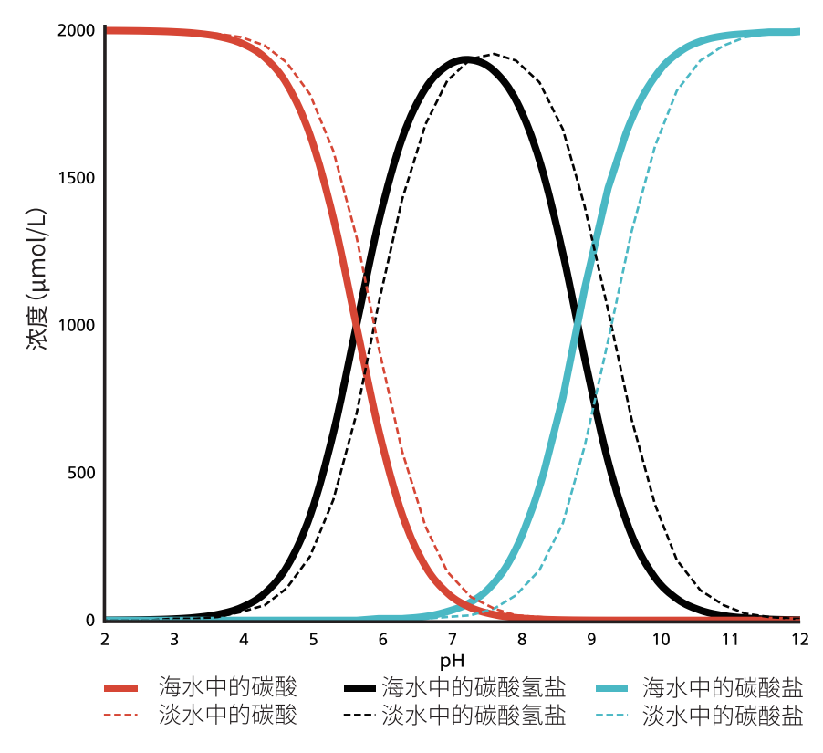图18 Bjerrum图：15°C 下，总溶解无机碳（DIC）为 2000 μmol/L 时，海水和淡水中碳酸、 碳酸氢盐和碳酸盐的分布随 pH 变化的情况（Middelburg, 2024）
更多相关的物理化学讨论（如酸碱平衡原理）请参见笔者的翻译稿件：《地球系统科学中的热力学与平衡》。
Q45. [E]假设地球早期的降水量显著增加，以下（ ）可能是水文地球化学的直接反应。
A. 海洋盐度降低，化学风化作用被削弱；
B. 化学风化作用增强，大量碳酸盐进入海洋；
C. 蓝细菌光合作用减弱，氧气浓度下降；
D. 地表岩石分解速率下降，矿物循环中断。
【讨论】下面这张图讲得很清晰：降水量的增加会导致碳酸盐的风化，在径流的作用中进入海洋（Bertrand and Legendre, 2021）。
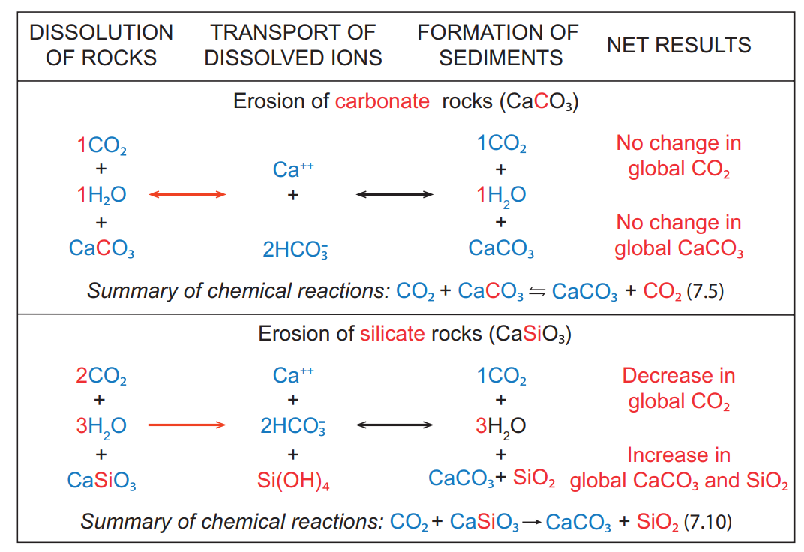图19 碳酸盐（carbonate）和硅酸盐（silicate）岩石的化学蚀变过程：通过CO₂酸化的水溶解岩石，将生成的离子在水中运输，形成CaCO₃沉积物（sediment），以及化学反应的净结果。蓝色和红色字符分别表示两个过程的相似性和差异性。双箭头和向右箭头分别表示双向（可逆）和单向（不可逆）化学反应。Licensed under CC BY-SA 4.0 by Philippe Bertrand, Louis Legendre and Mohamed Khamla.
推荐阅读：《宜居地球——地球系统与生命的共演化》 第7章《自然温室效应：与地质活动的关系》，Philippe Bertrand、Louis Legendre著；焦念志、蔡阮鸿、韩喜球等译，地质出版社，2024。
Q46. [E]在全球冰冻期（雪球地球事件）结束后，以下（ ）现象可能发生。
A. 冰川快速融化，释放大量矿物质进入海洋；
B. 大气中温室气体浓度增加，导致气温快速升高；
C. 海洋中缺氧环境导致厌氧微生物繁盛；
D. 化学风化作用重新加强，吸收大量二氧化碳。
【讨论】A选项：冰川融化会将大量淡水中的矿物质带入海洋；D选项，冰川融化使得地表岩石裸露接受风化，促进了Q45B选项所述的过程。
B选项：冰川不封存温室气体；C选项是雪球地球过程中的情况。
Q47. [E]在地球水文地球化学的演化过程中，以下（ ）最能解释水循环对全球气候的调节作用。
A. 水循环通过化学风化吸收二氧化碳，降低温室效应；
B. 水循环通过火山活动释放热量，增加全球气温；
C. 水循环通过海洋蒸发增加氧气含量，减缓气候变化；
D. 水循环通过增加大气中甲烷浓度，稳定气温波动。
【讨论】”最能解释“要求我们选择一个最符合的。
A选项：
硅酸盐风化速度与大气CO2含量之间存在负反馈关系：地球温度升高或降低导致硅酸盐风化吸收大气CO2速度的相应变化，从而降低或升高大气CO2含量，抵消初始温度变化；同样，排气作用或者有机岩石氧化的增加或减少会导致大气CO2含量升高或降低，从而通过温室效应促进或减弱硅酸盐风化对大气CO2的消耗，使碳循环达到新的平衡。这一负反馈机制调节了地球气候的长期相对稳定性和碳循环的平衡，是地球宜居环境的重要保证（Penman et al., 2020）。这一过程可以用下面的反馈图示说明。其中负耦合的个数为奇数，所以是负反馈。
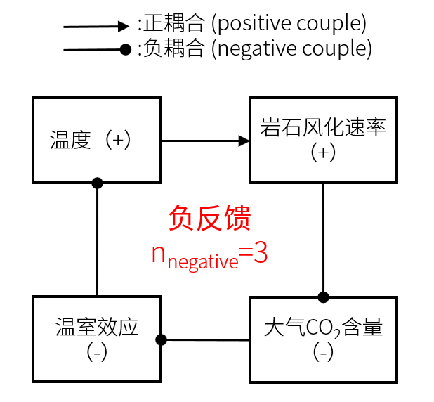图20 岩石风化负反馈，由笔者自绘
B选项、D选项：
我们如何定义所谓“对全球气候的调节作用？过热或过冷能通过反馈机制调节温度。火山活动的机制是在地圈内部的，地表环境的因不会导致火山活动的果——它们更像是突发事件；对于D选项，如果一些不稳定的情况导致海底储量巨大的甲烷释放，可能会造成巨大的地质灾难，比如古新/始新世高温事件（Paleocene/Eocene Thermal Maximum，PETM）。这是55 Ma左右总共不过20万年的突变，推断有特大量的甲烷气在短短的2万年里从海底放出，引起的温室效应造成高温，海水从表层到深部增温5~8℃，达到了新生代的最高值。
所以，B选项和D选项都是水循环过程中的突发事件，是不稳定的变量，而不是对全球气候的调节作用。这是水圈和地圈的相互作用，但就其它圈层而言我们有一个同样有意思的话题：Gaia假说。
学术拓展 生物圈和地圈的相互作用：Gaia假说
一个系统，比如人体的，温度是按照负反馈控制原则进行调节的，即当体温偏离正常范围时，下丘脑会发出指令对身体进行相应的调节，使体温恢复正常范围。在一定的环境温度下，人体可以通过调节代谢率和散热来保持相对稳定的体温。但当温度过高或过低的时候，人体也无力回天。现在我们把研究的对象从人体转为整个地球系统，就是英国科学家Lovelock（1919-2022）于1972年提出的Gaia假说。
Gaia假说的核心思想是地球就像一个超级有机体，生物演化与环境变化相互作用，地球生物通过反馈过程对地球气候和环境进行调控，从而造就适合生物自身持续生存的环境。Gaia假说强调生物在地球系统演化中起了关键的作用。 Lovelock与合作者及后继者设计了一系列的模型实验，通过从简单（单色雏菊，双色雏菊）到复杂（多色雏菊）的雏菊盖度—反照率—气候反馈过程模拟，阐明了生物对环境的自适应和自调控过程（Watson and Lovelock，1983；Kasting et al., 2022）。
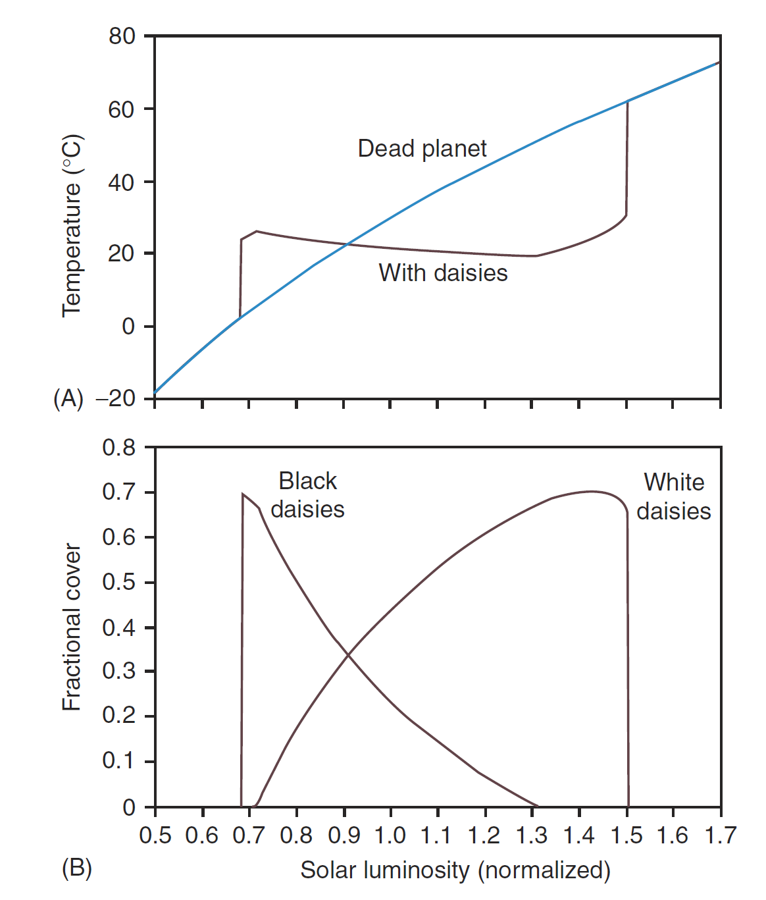图21 “雏菊世界（Daisyworld ) ”是个最简单的假想星球，没有大气、没有地形，只有灰色的土壤和有黑白之分的雏菊。这里的自变量是太阳的光度，应变量是温度（图A）和白雏菊、黑雏菊的占比（图B）。随着太阳光度（横轴）的增加，如果没有雏菊的调控作用（对应图A蓝线，没有植物），温度会呈几乎线性增加。如果太阳光度在0.7-1.5区间（单位：倍目前的太阳光度），地球能支撑雏菊的生长。雏菊的生长释放温室气体，这导致了图A表征温度的黑线在0.7到0.9之间的急剧上升，但随着太阳光度的增加，温度会降低，直到超过阈值（约为1.3），稳态失调，温度才会（急剧）上升。在这一过程中，低反照率的黑雏菊在太阳光度较低的时候占据主要地位；高反照率的白雏菊在太阳光度较高的时候占据主要地位（图B），因为反照率越低越有利于吸收辐射，维持生长。（Watson and Lovelock，1983）
C选项：海洋蒸发不会增加氧气含量，氧气含量的增加也没法直接减缓气候变化。这个选项一点道理都没有。
Q48-Q50 地层分析 3分
地层是具有时间顺序（古生代到中生代包括寒武纪、奥陶纪、志留纪、泥盆纪、石炭纪、二叠纪、三叠纪、侏罗纪和白垩纪）的层状岩石，其岩性和构造特征能揭示地质时期的地理环境和地质演化过程。题图 19 为某地地层出露分布示意图。完成下面小题。

题图 19 某地地层出露分布示意图
Q48. [G]断层东北侧的岩层（ ）。
A. 相对西南侧抬升； B. 向西北水平移动；
C. 相对西南侧下沉； D. 向东南水平移动。
Q49. [G]该区域地壳至少抬升了（ ）。
A. 1 次； B. 2 次； C. 3 次； D. 4 次。
【讨论】二叠纪地层缺失一次，花岗岩侵入体出露一次。这题竟然把地层代号给出来了，不然难度还能再大些。
Q50. [G]该区域经历的地质作用过程是（ ）。
A．沉积成岩、断裂作用、水平挤压、岩体侵入；
B. 水平挤压、沉积成岩、岩体侵入、断裂作用；
C. 水平挤压、断裂作用、岩体侵入、沉积成岩；
D. 沉积成岩、水平挤压、岩层断裂、岩体侵入。
【讨论】根据地层层序律即可排列。
三、综合分析题（单选或多选，每一个正确答案得 2 分，选错一个扣 2 分，共 56 分）
W1-W6 岩体力学 16分
脆性破裂是浅部地壳岩石发生变形的主要机制，破裂的类型主要包括张破裂（节理）和剪破裂（断层）两类。其中，库仑破裂准则描述了岩石发生剪破裂所需的临界应力条件，即当岩石受到的剪应力超过岩石所能承受的最大剪应力（或抗剪强度）时，岩石即发生剪破裂。摩擦定律是确定岩石的抗剪强度的理论基础，$ \tau = C + \mu \sigma_n $，其中$\tau$为剪应力，$\sigma_n$为正应力，$C$为内聚力，$\mu$为内摩擦系数。假设地壳浅部岩石受到的应力状态如题图20所示。已知岩石的内聚力为$50\ \text{MPa}$，内摩擦系数为$0.5$，$\sigma_1 = 200\ \text{MPa}$，$\sigma_3 = 50\ \text{MPa}$。据此回答下面W1-W6。

题图20 地壳浅部岩石受到的应力状态
W1. [P]平行σ1 和垂直σ3 的平面上所受到的正应力和剪应力分别为（ ）。
A. 50 MPa 和 0 MPa； B. 200 MPa 和 0 MPa；
C. 100 MPa 和 50 MPa； D. 200 MPa 和 50 MPa。
W2. [P]θ 角为 30°的平面上的正应力为（ ）。
A. 125 MPa； B. 163 MPa； C. 185 MPa； D. 200 MPa。
W3. [P]θ 角为 30°的平面上的剪应力为（ ）。
A. 45 MPa； B. 65 MPa； C. 75 MPa； D. 100 MPa。
W4. [P]如果要使岩石发生剪破裂，可以通过以下哪些方式实现（ ）。
A. σ1 增大，σ3 不变； B. σ1 不变，σ3 增大；
C. σ1 和σ3 同时减小； D. σ1 和σ3 同时增大。
W5. [P]孔隙流体广泛存在于地壳中，可以产生孔隙流体压力，孔隙流体压力可以弱化岩石，使岩石更容易发生剪破裂。那么在上述情况下，需要（ ）的孔隙流体压力可以使岩石发生剪破裂。
A. 42.3 MPa； B. 47.5 MPa； C. 52.5 MPa； D. 57.3 MPa。
W6. [P]断层强度限定了地壳的极限强度，断层强度由小到大顺序为（ ）。
A. 正断层、走滑断层、逆断层； B. 正断层、逆断层、走滑断层；
C. 走滑断层、正断层、逆断层 ； D. 断层强度与断层性质无关。
【讨论】
Anderson（1905）基于库伦准则提出了三种断层类型：正断层、逆断层和走滑断层，分别对应不同的主应力状态。
正断层形成于拉张应力环境，最大主应力为垂直应力，断层倾角约60°；
逆断层形成于挤压应力环境，最小主应力为垂直应力，断层倾角约30°；
走滑断层形成于水平剪切应力环境，中间主应力为垂直应力，断层面近直立。
随着断层倾角的减小，摩擦强度越来越大。在不破裂的情况下，断层强度由小到大的顺序为走滑断层、正断层、逆断层（童亨茂，2013）。
本题与2023年预赛的（Q26）一致：
Q26. 上地壳普遍存在断层，断层的摩擦强度限定了脆性地壳的极限强度。 断层强度由小到大顺序为：
A. 正断层、走滑断层、逆断层；
B. 正断层、逆断层、走滑断层；
C. 走滑断层、正断层、逆断层；
D. 断层摩擦强度与断层性质无关。
本组题目应该是历年来CESO预赛难度最大的题。考虑到知识的综合性和复杂性，本组题目（W1-W5）的讨论采取融合专栏的方式进行。决赛的部分进阶题也将采用此方式。
专题 岩体力学
地壳中各种各样的地质构造，都是岩层和岩体在力的作用下，发生变形和相对位移的结果。要想了解各种地质构造形成的力学原因，并认识它们的发生和发展的规律，就必须掌握分析固体变形的一些基本力学原理。本部分将先从最为简单的单轴应力分析入手，探究岩石变形分析的力学原理。
单轴应力分析
应力（stress）是作用于物体内任意截面单位面积上的附加内力，表示内力的大小，其单位为kg/cm^2^。单轴应力指空间中的岩石仅受到一个方向的力。设作用于单位变形物体上的外力为$P_1$，内力为$p_1$，那么垂直于作用面的截面$A_0$（即截面MO的长度）上的主应力为$\sigma_1=\frac{p_1}{A_0}$；斜交于作用面的截面（即截面MN的长度）上的主应力为$\sigma_A=\frac{p_1}{A_\alpha}$。令为合应力；$\sigma_1$为主应力；σ为正应力；τ为剪应力；α为截面与主平面的夹角，则在图22的右图中，$\sigma_A$、σ、τ构成一个矢量直角三角形。

图22 单轴应力分析
根据受力平衡关系：
$$
\sigma_1 = \frac{p_1}{A_0}; \quad \sigma_A = \frac{p_1}{A_\alpha}
$$
α 的几何关系（面积投影）为
$$
\cos\alpha = \frac{A_0}{A_\alpha} \Rightarrow A_0 = A_\alpha \cos\alpha
$$
将几何关系代入受力平衡：
$$
\sigma_A = \frac{p_1}{A_\alpha} = \frac{p_1}{A_\alpha \cos\alpha} \cdot \cos\alpha = \sigma_1 \cos\alpha
$$
又因为斜截面上的正应力分量
$$
\sigma = \sigma_A \cos\alpha = \sigma_1 \cos^2 \alpha
$$
所以利用三角恒等式
$$
\cos 2\alpha + 1 = 2\cos^2 \alpha \Rightarrow \cos^2 \alpha = \frac{1 + \cos 2\alpha}{2}
$$
正应力即可表示为：
$$
\boxed{\sigma = \frac{\sigma_1}{2} (1 + \cos 2\alpha)}
$$
对于剪应力τ，分析可知，斜截面上的剪应力分量：
$$
\tau = \sigma_A \sin\alpha = \sigma_1 \sin\alpha \cos\alpha
$$
利用二倍角公式：
$$
\sin 2\alpha = 2 \sin\alpha \cos\alpha
$$
因此剪应力可表示为：
$$
\boxed{\tau = \frac{\sigma_1}{2} \sin 2\alpha}
$$
这两个带框的公式就是单轴应力变换公式。它们在拉伸和挤压情况下都适用，只是压应力在公式中为正号，张应力为负号。
双轴应力分析
当单元体同时受到两个相互垂直的应力作用时，沿这两个方向的正应力分别以 $\sigma_1$ 和 $\sigma_3$ 表示，并设 $\sigma_1 > \sigma_3$，于是该物体处于双轴应力状态之中。当物体受相互垂直的压力 $P_1$、$P_3$ 作用，且 $P_1 > P_3$ 时，就可用前述方法，分析任意截面MN上的应力状态。首先，设想当物体只受到外力 $P_1$ 作用时，则截面MN上的正应力 $\sigma_a$ 和剪应力 $\tau_a$，可按单轴应力变换公式求得：
$$
\sigma_a = \frac{\sigma_1}{2} (1 + \cos 2\alpha)
$$
$$
\tau_a = \frac{\sigma_1}{2} \sin 2\alpha
$$
其次，设该物体又受到外力 $P_3$ 的作用，外力与截面MN的法线交角为 $\beta = 90^\circ + \alpha$，则截面MN上的正应力 $\sigma_\beta$ 和剪应力 $\tau_\beta$ 也可按单轴应力变换公式求出：

图23 双轴应力状态下的受力分析，各符号定义如下：
$$
\begin{aligned}
P_1, , P_3 & : \text{外力} \
p_1, , p_3 & : \text{内力} \
\sigma_1, , \sigma_3 & : \text{主应力} \
\sigma_{A1}, , \sigma_{A3} & : \text{合应力} \
\sigma_a, , \sigma_{\beta} & : \text{正应力分量} \
\tau_a, , \tau_{\beta} & : \text{剪应力分量}
\end{aligned}
$$
$$
\begin{aligned}
\sigma_\beta &= \frac{\sigma_3}{2} (1 + \cos 2\beta) \
&= \frac{\sigma_3}{2} + \frac{\sigma_3}{2} \cos (180^\circ + 2\alpha) \
&= \frac{\sigma_3}{2} - \frac{\sigma_3}{2} \cos 2\alpha \
&= \frac{\sigma_3}{2} (1 - \cos 2\alpha)
\end{aligned}
$$
$$
\begin{aligned}
\tau_\beta &= \frac{\sigma_3}{2} \sin 2\beta \
&= \frac{\sigma_3}{2} \sin (180^\circ + 2\alpha) \
&= -\frac{\sigma_3}{2} \sin 2\alpha
\end{aligned}
$$
在 $\sigma_1$ 和 $\sigma_3$ 的共同作用下，在垂直于截面MN上的正应力为：
$$
\begin{aligned}
\sigma &= \sigma_a + \sigma_\beta \
&= \boxed{\frac{\sigma_1 + \sigma_3}{2} + \frac{\sigma_1 - \sigma_3}{2} \cos 2\alpha}
\end{aligned}
$$
平行于截面MN上的剪应力之和为：
$$
\begin{aligned}
\tau &= \tau_a + \tau_\beta \
&= \frac{\sigma_1}{2} \sin 2\alpha - \frac{\sigma_3}{2} \sin 2\alpha \
&=\boxed{\frac{\sigma_1 - \sigma_3}{2} \sin 2\alpha }
\end{aligned}
$$
带框的部分统称为双轴应力变换公式。
下面我们来分析一个实例。地壳浅部岩石受到的应力状态如下图所示。已知岩石的内聚力为$50,\text{MPa}$，内摩擦系数为$0.5$，$\sigma_1 = 200,\text{MPa}$，$\sigma_3 = 50,\text{MPa}$。
我们需要分析两组平面上的正应力和剪应力：
平行σ1 和垂直σ3 的平面（主应力平面）
θ 角为 30°的平面（剪应力平面）
在主应力平面（法线与主应力轴重合）上，法线平行 $\sigma_3$ 的平面，正应力为 $\sigma_n = \sigma_3 = 50 \ \text{MPa}$，在主应力方向上，只有正应力，没有剪应力。此外，通过双轴应力变换公式，设 $\theta$ 为平面法线与 $\sigma_1$ 的夹角， $\theta = 90^\circ$：
$$
\sigma_n = \frac{\sigma_1 + \sigma_3}{2} + \frac{\sigma_1 - \sigma_3}{2} \cos(2\theta) = \frac{200 + 50}{2} + \frac{200 - 50}{2} \cos(180^\circ) = 125 - 75 = 50 \ \text{MPa}
$$
$$
\tau = \frac{\sigma_1 - \sigma_3}{2} \sin(2\theta) = \frac{200 - 50}{2} \sin(180^\circ) = 75 \times 0 = 0 \ \text{MPa}
$$
所以平行σ1 和垂直σ3 的平面上所受到的正应力和剪应力分别为 50 MPa 和 0 MPa。
接着，我们来分析θ 角为 30°的平面上的正应力和剪应力。使用双轴应力变换公式得到正应力：
$$
\sigma_n = \frac{\sigma_1 + \sigma_3}{2} + \frac{\sigma_1 - \sigma_3}{2} \cos(2\theta)
$$
其中 $\theta = 30^\circ$ 为平面与水平方向的夹角（即与 $\sigma_3$ 方向的夹角）。
$$
\therefore \quad \sigma_n = 125 + 75 \times \cos(2\times 30^\circ) = 125 + 37.5 = 162.5 \approx 163 \ \text{MPa}
$$
继续使用双轴剪应力变换公式：
$$
\tau = \frac{\sigma_1 - \sigma_3}{2} \sin(2\theta)
$$
$$
\Rightarrow \tau = 75 \times \sin(2\times 30^\circ) \approx 64.95 \approx 65 \ \text{MPa}
$$
所以θ 角为 30°的平面上所受到的正应力和剪应力分别为 163 MPa 和 65 MPa。
回到双轴应力变换公式。我们将它们两边平方，并联立，得到
$$
\left( \sigma - \frac{\sigma_1 + \sigma_3}{2} \right)^2 + \tau^2 = \left( \frac{\sigma_1 - \sigma_3}{2} \right)^2
$$

图24 双轴应力莫尔圆
这是一个圆的方程，它代表圆心在 $\left( \frac{\sigma_1 + \sigma_3}{2}, 0 \right)$，半径为 $\frac{\sigma_1 - \sigma_3}{2}$ 的一个圆。这就是双轴应力莫尔圆。如上图，做出它的图解，在$\sigma$轴上按比例取 $OA = \sigma_1$、$OB = \sigma_3$，以$AB$为直径，以$C$为圆心作圆。设单位体某一截面的法线与主应力$\sigma_1$的夹角为$\alpha$，在莫尔圆上从$CA$起以逆时针方向取一圆心角 $\angle ACD = 2\alpha$，圆上的$D$点相当于截面$MN$，$D$点的坐标$OE$和$DE$分别等于该截面上的正应力和剪应力$\tau_\alpha$。证明如下：
$$
CD = AC = BC = \frac{AB}{2} = \frac{OA - OB}{2} = \frac{\sigma_1 - \sigma_3}{2}
$$
$$
\begin {aligned}
OE =& OB + BC + CE\
=& \sigma_3 + \frac{\sigma_1 - \sigma_3}{2} + CD \cos 2\alpha\
=& \frac{\sigma_1 + \sigma_3}{2} + \frac{\sigma_1 - \sigma_3}{2} \cos 2\alpha \
=& \sigma_\alpha
\end {aligned}
$$
$$
\begin {aligned}
DE &= CD \sin 2\alpha\&= \frac{\sigma_1 - \sigma_3}{2} \sin 2\alpha \&= \tau_\alpha
\end {aligned}
$$
从上面的证明和莫尔应力圆图解分析中可知，当物体或岩石在双轴应力状态下，物体内一点的任意截面上的正应力和剪应力值与两个互相垂直的主应力的大小和性质有关，也与这个截面和主平面的交角有关系。此外，还可看出：
当$\alpha = 0^\circ$时，截面上$\sigma = \sigma_1, \tau = 0$；在$\alpha = 90^\circ$的截面上，$\sigma = \sigma_3, \tau = 0$。莫尔圆上可以看出A点是最大的正应力$\sigma_1$，B点是最小的正应力$\sigma_3$，此两点均无剪切力。其它各点所代表的截面上则既有正应力，又有剪应力，其值同$\sigma_1, \sigma_3$之大小及截面与$\sigma_1, \sigma_3$的交角有关，但均在$\sigma_1$与$\sigma_3$之间。
最大剪应力是在与主应力成45°（和135°）的截面上，也就是平分两个主应力方向的两个截面上，其大小等于$\frac{\sigma_1 - \sigma_3}{2}$，即是主应力差的一半。
莫尔-库伦强度理论
莫尔-库伦强度理论认为，物体抵抗剪切破裂的能力不仅与作用在截面上的剪应力有关，还与该截面上的正应力有关。设产生剪切破裂的极限剪应力（或称临界剪应力）为$\tau$，则可写成如下关系式：
$$
l: \tau = C + \mu \sigma_n
$$
式中 $C$ 为当$\sigma_n = 0$时物体的抗剪强度，在岩石变形研究中又称为内聚力，对于一种岩石而言为一常数；$\mu$为内摩擦系数，即为 $\sigma-\tau$ 坐标平面下直线 l 的斜率。如以直线的倾斜角$\phi$（同时亦为岩石的内摩擦角）表示，则$\mu = \tan \phi$，上面的式子可写为：
$$
\tau = \tau_0 + \sigma_n \tan \phi
$$
式中$\phi$角亦为岩石的内摩擦角。二者即为库伦破裂准则。
在 $\sigma - \tau$ 坐标平面内，上面的式子为两条直线，如下图所示，称剪破裂线或包络线，它与极限应力圆的切点代表剪切破裂面的方位及其应力状态。显然，该切点并不对应于最大剪应力作用的截面，而是在略小于最大剪应力的截面，其上的正应力在$\sigma_1$与$\sigma_3$之间，并靠近$\sigma_3$。
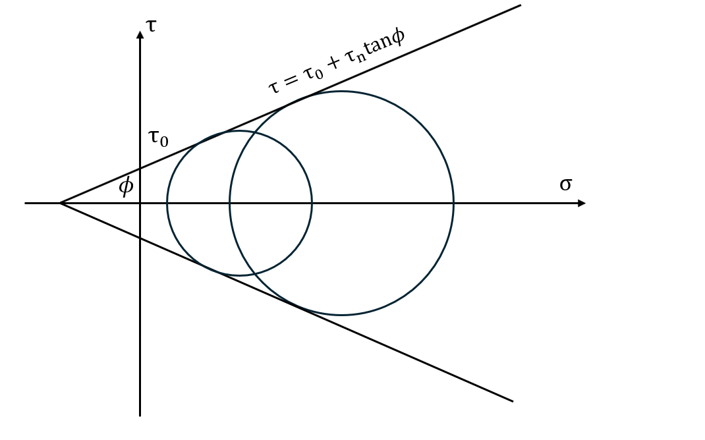图25 包络线
回到莫尔圆，这个圆的表达式为：
$$
C_0:\left( \sigma - \frac{\sigma_1 + \sigma_3}{2} \right)^2 + \tau^2 = \left( \frac{\sigma_1 - \sigma_3}{2} \right)^2
$$
这也就是说，通过改变$\sigma_1$与$\sigma_3$的大小，我们可以使得岩石发生剪切破裂：$\sigma_1+\sigma_3$决定圆心位置，值越大越往右移动；$\sigma_1-\sigma_3$决定半径，值越小半径越小。根据库伦破裂准则，当岩石受到的剪应力超过岩石所能承受的最大剪应力（或抗剪强度）时，岩石即发生剪破裂。所以，当莫尔圆触碰到或超过这条剪破裂线时，岩石发生剪切破裂。为了方便分析，考虑刚刚我们提到的那个例子（内聚力为$50,\text{MPa}$，内摩擦系数为$0.5$，$\sigma_1 = 200,\text{MPa}$，$\sigma_3 = 50,\text{MPa}$。）
在这一情况下，最大剪应力出现在与主应力方向成45°和135°的截面上，此时$\sin(2\theta)$化为1，其数值计算公式为：
$$
\tau_{max} = \frac{\sigma_1 - \sigma_3}{2}
$$
考虑初始状态：最大剪应力 $\tau_{\text{max}} = \frac{\sigma_1 - \sigma_3}{2} = 75 \ \text{MPa}$，在 $\theta = 45^\circ$ 时，$\sigma_n = 125 \ \text{MPa}$，剪切强度 $\tau_\text{max}=C + \mu \sigma_n = 50 + 0.5 \times 125 = 112.5 \ \text{MPa}$。因 $75 < 112.5$，在这个条件下未发生破裂。其莫尔圆为
$$
C_1: (\sigma_n - 125)^2 + \tau^2 = 75^2
$$
接着，我们列举所有改变$\sigma_1$与$\sigma_3$的情况：
| 情况编号 | $\sigma_1$ | $\sigma_3$ | 半径变化 ($\frac{\sigma_1 - \sigma_3}{2}$) | 圆心变化 ($\frac{\sigma_1 + \sigma_3}{2}$) |
|---|---|---|---|---|
| ① | 增加 | 不变 | 增加 | 右移 |
| ② | 减小 | 不变 | 减小 | 左移 |
| ③ | 不变 | 增加 | 减小 | 右移 |
| ④ | 不变 | 减小 | 增加 | 左移 |
| ⑤ | 减小 | 减小 | 不变 | 左移 |
| ⑥ | 增加 | 增加 | 不变 | 右移 |
可知，①②、③④、⑤⑥各为一类，作为圆的方程，我们可以把库伦破裂准则带入C0，得到一个关于σ的式子，其参数为σi (i=1, 3)。这可以视作一个单变量解析几何问题，其解的几何意义就是当σi变为多少的时候，圆与直线有唯一的交点（即$\Delta=b^2-4ac=0$）。下面我们分类讨论：
①②：
带入σ3=50 MPa，$l: \tau = 0.5 \sigma+50$
$$
C_2:\left( \sigma - \frac{\sigma_1 + 50}{2} \right)^2 + (0.25\sigma^2+50\sigma+2500) = \left( \frac{\sigma_1 - 50}{2} \right)^2
$$
整理，得
$$
1.25\sigma^2-\sigma\sigma_1+50\sigma_1+2500=0
$$
令$\Delta=b^2-4ac=0$，解得 $\sigma _1=125+75\sqrt{5}$（负值舍去，因为它代表的最大主应力是拉应力，那样是张裂而非剪切破裂。$\sigma_3$也类似，但如果$\sigma_3$是负的，不会意味着整个应力场都是拉应力。），约等于 292.71 MPa，大于原来的200 MPa。所以，$\sigma_1$增加，$\sigma_3$不变时，岩石会发生剪破裂。
③④：
同理，带入σ1=200 MPa，$l: \tau = 0.5 \sigma+50$
$$
C_3:\left( \sigma - \frac{200+\sigma_3 }{2} \right)^2 + (0.25\sigma^2+50\sigma+2500) = \left( \frac{200-\sigma_3 }{2} \right)^2
$$
整理，得
$$
1.25\sigma^2-(150+\sigma_3)\sigma+200\sigma_3+2500=0
$$
令$\Delta=b^2-4ac=0$，解得$\sigma _3=350±150\sqrt{5}$，都为正数，约等于685.41和14.59。所以，在$\sigma_1$不变的情况下，$\sigma_3$无论是增大还是减小，都会导致岩石发生剪破裂。
⑤⑥：
这种情况下，$\sigma_1$和$\sigma_3$同时减少（增加）。虽然有两个变量，但我们可以换元求解。不妨设一个特殊情况，即$\sigma_1$和$\sigma_3$减少（增加）的量一致，即$\frac{\sigma_1 - \sigma_3}{2}=75= const.$。这样，令$k=\frac{\sigma_1 + \sigma_3}{2}$，则带入$l: \tau = 0.5 \sigma+50$
$$
C_4:\left( \sigma - k \right)^2 + (0.25\sigma^2+50\sigma+2500) = 75^2
$$
整理，得
$$
1.25\sigma^2+(50-2k)\sigma+(k^2-3125)=0
$$
令$\Delta=b^2-4ac=0$，解得$k=-100±75\sqrt{5}$。当$k=-100 - 75\sqrt{5}$时，$\sigma_1 + \sigma_3≈-535.42$，显然不可能；当$k=-100 + 75\sqrt{5}$时，$\sigma_1 + \sigma_3≈135.41>0$，相较于原来的250 MPa减小了，所以，情况⑤（$\sigma_1$减小，$\sigma_3$减小）是可能的。而情况⑥，半径越来越小，圆心还愈向右移，必定不可能与直线有交点。
综上所述，当且仅当：
$\sigma_1$增加，$\sigma_3$不变；
$\sigma_1$不变，$\sigma_3$增加；
$\sigma_1$不变，$\sigma_3$减小；
$\sigma_1$减小，$\sigma_3$减小
时，岩石会发生剪破裂。
利用Geogebra（https://www.geogebra.org/geometry）可以轻松地探究 $\sigma_1$ 和 $\sigma_3$ 的变化对剪切的影响。笔者用 Deepseek 写了个等效 html，它可以在 lant 的 repository 里找到。当然你也可以自己画一个。

图26 探究σ的变化对剪切的影响
孔隙液压
地壳岩石是多孔介质，孔隙中充满流体（如地下水）。孔隙流体压力 $P$ 由静水压力、构造作用或人为注入产生。在孔隙中，$P$ 抵消部分 $\sigma$，使颗粒间接触力减小。即
$$
\tau = C + \mu (\sigma - P)
$$
如果我们需要知道至少需要多少的 P 可以使岩石发生剪破裂，那么就得找到 $P$，使某个平面上的 $\tau$ 等于 $C + \mu (\sigma_n - P)$，即刚好发生剪切破裂。根据上面的讨论，破裂最易发生在莫尔圆与破裂线 $\tau = C + \mu \sigma= \tau_0 + \sigma_n \tan \phi$ 的切点对应的平面。继续考察上面的例子（内聚力为 $50,\text{MPa}$，内摩擦系数为$0.5$，$\sigma_1 = 200,\text{MPa}$，$\sigma_3 = 50,\text{MPa}$。），破裂线斜率 $\mu=0.5$：
$$
\mu = \tan \phi \implies \phi = \arctan(0.5) \approx 26.57^\circ
$$
切点对应的平面法线与 $\sigma_1$ 的夹角$\theta$（就是上文提及的$\alpha$，这里的理论推导是α，实例是θ）为：
$$
\boxed{\theta = 45^\circ + \frac{\phi}{2}} \approx 45^\circ + \frac{26.57^\circ}{2} = 45^\circ + 13.285^\circ = 58.28^\circ
$$
带入应力变换公式：
$$
\sigma = \frac{\sigma_1 + \sigma_3}{2} + \frac{\sigma_1 - \sigma_3}{2} \cos(2\theta)=93.3\ \mathrm{MPa}
$$
$$
\tau = \frac{\sigma_1 - \sigma_3}{2} \sin(2\theta)=68 \ \text{MPa}
$$
$$
\therefore \quad \tau = C + \mu (\sigma_n - P)\Rightarrow68=50+0.5(93.3-P)
$$
解得 P=57.3 MPa，即至少需要57.3 MPa的孔隙流体压力可以使岩石发生剪破裂。
下面我们给出式上面 $\theta$ 带框部分的详细推导，它们是结合Grok的思路撰写的，仅供参考。
几何上，此处 $45^\circ $表示最大剪应力平面对应的角度（参见双轴应力分析后面的讨论），$\frac{\phi}{2} $是内摩擦角对破裂平面位置的修正。
分析上，对莫尔圆方程 $(\sigma - a)^2 + \tau^2 = R^2$ 进行隐函数求导：
$$
2(\sigma - a) + 2\tau \frac{\mathrm{d}\tau}{\mathrm{d}\sigma} = 0
$$
整理得
$$
\frac{\mathrm{d}\tau}{\mathrm{d}\sigma} = -\frac{\sigma - a}{\tau}
$$
即莫尔圆在$(\sigma, \tau)$处的斜率。
在切点处，莫尔圆的斜率 $-\frac{\sigma - a}{\tau}$ 必须等于破裂线的斜率 $\tan \phi$，即
$$
-\frac{\sigma - a}{\tau} = \tan \phi
$$
为了求解，我们用莫尔圆的参数方程表示切点坐标。切点 $(\sigma, \tau)$ 对应的平面法线与 $\sigma_1$ 的夹角为 $\theta$，因此
$$
\sigma = a + R \cos(2\theta), \quad \tau = R \sin(2\theta)
$$
将这些表达式代入斜率条件：
$$
-\frac{\sigma - a}{\tau} = -\frac{(a + R \cos(2\theta)) - a}{R \sin(2\theta)} = -\frac{R \cos(2\theta)}{R \sin(2\theta)} = -\cot(2\theta)
$$
于是，斜率相等条件变为
$$
-\cot(2\theta) = \tan \phi
$$
因为 $\cot(x) = \frac{\cos x}{\sin x}$，$\tan \phi = \frac{\sin \phi}{\cos \phi}$，所以 $-\cot(2\theta) = \tan \phi$ 可写为
$$
-\frac{\cos(2\theta)}{\sin(2\theta)} = \frac{\sin \phi}{\cos \phi}
$$
$$
-\cos(2\theta) \cos \phi = \sin(2\theta) \sin \phi
$$
即
$$
\sin(2\theta) \sin \phi + \cos(2\theta) \cos \phi = 0
$$
这可以化为 $\cos(2\theta - \phi) = 0$，因此 $2\theta - \phi = 90^\circ + k \cdot 180^\circ$（$k$ 为整数）。取最简单解 $k = 0$，得 $2\theta - \phi = 90^\circ$，即 $2\theta = 90^\circ + \phi$。
所以
$$
\boxed{\theta = 45^\circ + \frac{\phi}{2}}
$$
【笔者的思考】
从这组题目中能挖出来很多有意思的知识点，比如单轴、双轴应力分析等内容（其实甚至有三轴应力分析，篇幅所限，未能呈现）。更多与岩体力学相关的讨论可以参见这本书：武汉地质学院、成都地质学院、南京大学地质系、河北地质学院. 构造地质学 [M]. 北京：地质出版社，1979。（武汉地质学院就是现在的中国地质大学（武汉），成都地质学院就是现在的成都理工大学）
笔者最开始看到这组题时想到的是2023年预赛的考察的库伦破裂准则，以为要用正交分解来解题，然而一点用没有。起初笔者翻书看到双轴应力分析的时候还不相信能考出这玩意，以为预赛最高的难度就是单轴应力变换公式的推导了，没想到啊……但问题是，材料根本没有给出任何背景信息，导致本题的得分集中分布在0~4分内（W1大部分学生有做对，W6也有20%的学生能做对），难度极大，区分度极低，放在这里意义不大，但作为专题探讨会是很不错的材料。

图27 2023年预赛的Q24-Q27，同样考察了库伦破裂准则，但难度较本组题目低很多。
W7-W13 圈层耦合系统 26分
地球具有明显的分层现象，自内而外可以分成内核、外核、地幔、地壳、大气圈等，科学家们提出了一系列的理论来描述这些不同圈层的运动，如板块构造理论、地幔柱理论等。目前一般认为地球不同圈层之间相互联系与影响，存在明显的物质与能量交换，共同构成一个异常复杂的系统（如题图 21 所示）。据此回答以下W7-W13 问题。

题图 21 圈层耦合系统
W7. [G]上地幔的顶部与地壳构成了地球外层的固态岩石圈，板块运动理论主要描述的就是岩石圈运动。假设岩石圈中岩石的密度为 3g/cm3, 请问岩石圈下部 100km 处的压力大致是（ ）。
A. 3 × 106 帕斯卡； B. 3 × 107 帕斯卡；
C. 3 × 108 帕斯卡； D. 3 × 109 帕斯卡。
【讨论】$p=\rho gh$，带入即得。注意km与cm的转换（1km=100000cm）。
W8. [G]板块构造活动会导致地震频发，地震活动既给人类带来巨大的灾难，但是也在地表形成了丰富多样的地貌景观。下列板块边界类型与其典型地震特性对应正确的是（ ）。
A. 俯冲带 - 深源地震； B. 断裂带 - 浅源地震；
C. 生长边界 - 中强地震为主； D. 碰撞边界 - 火山喷发多于地震。
【讨论】
A: 俯冲带的俯冲过程中，应力释放可发生浅源、中源和深源地震，尤其是深源地震（深度可达 300~700 km），如日本海沟附近的地震。
B: 断裂带是转换边界或陆内断裂带，以走滑运动为主，多浅源地震。
C: 生长边界（如洋中脊）是板块分离的地方，以拉张应力为主，地震多为浅源，震级通常较小（中小地震为主），因能量积累有限，难以形成强震。
D: 碰撞边界（如喜马拉雅山）缺乏俯冲熔融机制，火山喷发远少于地震。
W9.[G]虽然地震具有极大的灾害性，但我们人类依然无法准确预测地震。地震主要危害是地震波传到地表后导致的破坏，尤其是 S 波。现在可以利用 P 波和 S 波的到时差来提前预警 S 波的到达时间。假设某次地震的震源深度为 h=20 km，震中距（观察点到震中的地表距离）为 d=50 km，P 波在地壳中的平均速度为 Vp=6 km/s，S 波的速度为 Vs =3.5 km/s。请问，P 波到达后，大致有多长的 S 波到达预警时间（ ）。
A. 4 秒； B. 6 秒； C. 8 秒； D. 10 秒。
【讨论】设t1为P波到时，t2为S波到时，利用勾股定理求得震源到观察点的距离 $s=\sqrt{h^2+d^2} \approx 53.85 \ \text{km}$，$t_1=s/v_p=8.975 \ \text{s}$ ，$t_2=s/v_s=15.386 \ \text{s}$，$\Delta t=15.386-8.975=6.411\ \text{s}$，最接近B选项。
W10. [G]下列（ ）因素会对地表地形产生影响？
A. 气候条件； B. 地震和火山活动； C. 地壳的物质成分； D. 地幔运动。
W11. [G]关于地球圈层之间的相互作用，下列说法合理的是（ ）。
A. 板块构造理论描述的岩石圈水平运动，而地幔柱则主要描述从内核到地壳的竖直运动；
B. 地磁场一般认为是由液态外核流动所产生，其强度和方向比较稳定，对生命的演化非常重要；
C. 地球内部的物质和能量主要通过地震和火山释放到地表，而浅部的物质和能量则通过板块俯冲到达地球深部；
D. 地球内部的运动对大气圈和水圈也有着很强的影响。
【讨论】地幔柱是外核到地壳的竖直运动；地磁场变化很频繁，过去一千万年内发生了几十次地磁翻转。
W12. [G]全球气候变化对地震和火山活动可能产生间接影响，下列可能的机制包括（ ）。
A. 冰川消退引起地壳负荷减小，诱发火山喷发；
B. 全球变暖增加海水压力，可能抑制海底断层活动；
C. 降雨增加可能导致断层润滑，触发地震；
D. 气候变暖引发的风化作用减少板块俯冲速率。
【讨论】
- A选项就是地壳均衡，上覆载荷的减小会使得火山字面意义上的“绷不住了”；
- B选项同Q23的B选项，海水压力的增加会促进断层活动；
- C选项就是向断层内注入孔隙流体（见W5的讨论），通过降低断层的有效应力来触发地震；
- D选项的风化作用是地表物质迁移，而非对深时过程的影响。
W13. [G]假设某一板块长为 1000 km、宽为 1000 km、厚为 100 km，以 10 mm 每年的速度朝某一个方向做匀速运动。现要施加一个力将该板块在 1 年内停止运动，请估算一下该力的大小大致是（ ）。
A. 3 × 104 牛顿； B. 3 × 106 牛顿； C. 3 × 108 牛顿； D. 3 × 1010 牛顿。
【讨论】
V = 1017 m3
M = ρV，ρ 根据之前的题目取 3000 kg/m3，代入数据得 M = 3 × 1020 kg
T = 3.15 × 107 s
V0 = 3.17 × 10−10 m/s
a = V0 / T = 10−17 m/s2
F = Ma = 3000 N = 3 × 103 N
故题目有误，最接近的 A 选项也差了一个数量级。
W14-W17 碳循环与同位素分馏 8分
全球碳循环可简化为碳源（input）与碳汇（output）的平衡。其中，火山及变质去气和有机质风化排放的二氧化碳构成主要的碳源，而这些二氧化碳被碳酸盐沉积（carbonate precipitation）和有机质埋藏（organic carbon burial）移除，构成主要的碳汇过程（如题图 22 所示）。

题图 22 全球碳循环的简化图
地质学家在估算碳酸盐岩和有机质埋藏两者在碳汇作用中所占的相对比例时，往往需要用到它们的碳同位素值

$\delta^{13}C,$可简单理解为样品内$^{13}\text{C}$同位素的相对丰度。在物质平衡状态情况下，碳源总通量等于碳汇总通量，可以列出如下碳通量$F$和同位素$\delta^{13}\text{C}$质量平衡公式：
$$
F_{\text{碳源}} = F_{\text{碳汇}} = F_{\text{有机质}} + F_{\text{碳酸盐岩}}
$$

假设整个碳循环处于平衡态，碳源的$\delta^{13}\text{C}_{\text{碳源}}$为-7.00‰，回答W14-W17 问题：
W14. [P]假设现代碳酸盐岩的碳同位素组成 $\delta^{13}\text{C}{\text{碳酸盐岩}}$ 为 0.02‰，有机碳的碳同位素组成 $\delta^{13}\text{C}{\text{有机质}}$ 为-31.69‰，计算有机质埋藏和碳酸盐岩埋藏占总埋藏量的比例约为（ ）。
A. 22% 和 78%； B. 80% 和 20%；
C. 7% 和 93%； D. 31.7% 和 68.3%。
【讨论】运用同位素$\delta^{13}\text{C}$质量平衡公式，我们设有机质埋藏比例为 $x$ ，那么碳酸盐岩埋藏比例为 $(1-x)$，带入相关数据：

$$
-7‰ = x\cdot (-31.69‰) + (1-x)\cdot(0.02‰)
$$
解得$x≈0.2214$，那么$(1-x)=1-0.2214=0.7786$，即有机质埋藏比例为22%，碳酸盐岩埋藏比例为78%，选A。
W15. [P]假设有机碳与碳酸盐岩之间的碳同位素存在分馏平衡（即$\delta^{13}\text{C}{\text{有机质}}$与$\delta^{13}\text{C}{\text{碳酸盐岩}}$之间差值恒定），有机质埋藏比例的增加会导致（ ）。
A .$\delta^{13}\text{C}_{\text{有机质}}$ 不变；
B. $\delta^{13}\text{C}_{\text{有机质}}$ 变低
C.$\delta^{13}\text{C}_{\text{有机质}}$变高；
D. 不能确定。
【讨论】我们不妨沿用（W14）的数据。由于分馏平衡，我们可以得到：

解得 $\delta^{13}\text{C}_{\text{org}}^‘$ 变为了-29.20‰，相较于原来的-31.69‰增加了。
当然，如果我们从动力学平衡的角度来分析本题，那么在碳循环稳态下，系统的同位素分馏行为由质量守恒（conservation of mass）和平衡分馏（equilibrium fractionation）共同控制，核心关系为：
$$
\delta^{13}C_{\text{carb}} = \delta^{13}C_{\text{org}} + \Delta_{\text{org-carb}}
$$
设有机质埋藏比例为 $f_{\text{org}}$，碳酸盐岩的比例为 $1-f_{\text{org}}$，输入碳同位素为 $\delta^{13}C_{\text{输入}}$，则：
$$
\delta^{13}C_{\text{输入}} = f_{\text{org}} \delta^{13}C_{\text{org}} + (1-f_{\text{org}}) \delta^{13}C_{\text{carb}}
$$
将分馏关系代入：
$$
\begin{align}
\delta^{13}C_{\text{输入}} &= f_\text{org}(\delta^{13}C_\text{carb} - \Delta_{\text{org-carb}}) + (1 - f_{\text{org}}) \delta^{13}C_{\text{carb}} \
&= f_\text{org}\delta^{13}C_\text{carb} - f_\text{org}\Delta_{\text{org-carb}} + \delta^{13}C_{\text{carb}} - \delta^{13}C_\text{carb}f_{\text{org}} \
&=\delta^{13}C_{\text{carb}}- f_\text{org}\Delta_{\text{org-carb}} \
&=\delta^{13}C_{\text{org}} + (1-f_{\text{org}}) \Delta_{\text{org-carb}}
\end{align}
$$
$$
\text{i.e.}\quad \delta^{13}C_{\text{输入}} =\delta^{13}C_{\text{org}} + (1-f_{\text{org}}) \Delta_{\text{org-carb}}
$$
方程两边对 $f_{\text{org}}$ 求导。这是一个隐函数求导，为了使得符号清晰，这里使用了微分算子 $d/dx$ 的表达式。
$$
\frac{d}{df_{\text{org}}} \left[ \delta^{13}C_{\text{输入}} \right] = \frac{d}{df_{\text{org}}} \left[ \delta^{13}C_{\text{org}} \right] + \frac{d}{df_{\text{org}}} \left[ (1 - f_{\text{org}}) \Delta_{\text{org-carb}} \right]
$$
左边的$\delta^{13}C_{\text{输入}}$ 为常数，导数为 $0$：
$$
0 = \frac{d}{df_{\text{org}}} \left[ \delta^{13}C_{\text{org}} \right] + \frac{d}{df_{\text{org}}} \left[ (1 - f_{\text{org}}) \Delta_{\text{org-carb}} \right]
$$
对于右侧第二项：
$$
\frac{d}{df_{\text{org}}} \left[ (1 - f_{\text{org}}) \Delta_{\text{org-carb}} \right] = -\Delta_{\text{org-carb}}
$$
整理、带入得到：
$$
\frac{d}{df_{\text{org}}} \left[ \delta^{13}C_{\text{org}} \right] = \Delta_{\text{org-carb}} = 31.71‰
$$
这表示，有机质埋藏比例每增加 1 个单位（如 1%），其 $δ^{13}C$ 值将增加 31.71‰。所以，当 $f_{\text{org}}$ 增加时，$\delta^{13}C_{\text{org}}$ 必须升高以维持平衡。 这样一来，更多 $^{12}C$ 被埋藏到有机质中，剩余碳库的 $\delta^{13}C$ 整体变重（向正值方向增大），分馏平衡迫使 $\delta^{13}C_{\text{org}}$ 同步升高。这样，我们就不依赖具体数值解析出了正确的答案。
事实上，如果不考虑（W15）给出的数据，在 $\Delta_{\text{org-carb}}$ 不为常数 31.71‰ 的情况下（比如是一个负数），$\delta^{13}\text{C}_{\text{org}}$ 的变化情况是不确定的。在这种情况下应该选择D选项，除非题目有明确限定“根据（W15）之结果”。
W16. [P]假设有机碳与碳酸盐岩之间的碳同位素存在平衡分馏（即$\delta^{13}\text{C}{\text{有机质}}$与 $\delta^{13}\text{C}{\text{碳酸盐岩}}$之间差值恒定），根据下表推断（ ）时代有机质埋藏比例最高。
表 各时代碳酸盐岩碳同位素值
| age (Ma, 百万年前) | $\delta^{13}\text{C}_{\text{碳酸盐岩}}$ (‰) |
|---|---|
| 0-250 | 0.5 |
| 250-350 | 4.4 |
| 350-400 | 2.5 |
| 400-500 | 1.4 |
A. 0-250 Ma； B. 250-350 Ma； C. 350-400 Ma； D. 400-500 Ma。
【讨论】

分析上来看，我们要求 $f_\text{org}$ 与 $\delta^{13}C_{\text{carb}}$ 的关系。根据前面的讨论，在碳循环稳态下，同位素分馏满足以下条件：
$$
\delta^{13}C_{\text{输入}} = f_{\text{org}} \delta^{13}C_{\text{org}} + (1 - f_{\text{org}}) \delta^{13}C_{\text{carb}}
$$
$$
\Delta_{\text{org-carb}} = \delta^{13}C_{\text{carb}} - \delta^{13}C_{\text{org}} = 31.71%
$$
对于$\delta^{13}C_{\text{carb}}$ ，代入分馏关系
$$
\delta^{13}C_{\text{carb}} = \delta^{13}C_{\text{org}} + \Delta_{\text{org-carb}}
$$
结合 $\delta^{13}C_{\text{org}}$ 的表达式
$$
\delta^{13}C_{\text{carb}} = \left[ \delta^{13}C_{\text{输入}} - (1 - f_{\text{org}}) \Delta_{\text{org-carb}} \right] + \Delta_{\text{org-carb}}
$$
化简
$$
\delta^{13}C_{\text{carb}} = \delta^{13}C_{\text{输入}} + f_{\text{org}} \Delta_{\text{org-carb}}
$$
对 $f_{\text{org}}$ 求导
$$
\frac{d\delta^{13}C_{\text{carb}}}{df_{\text{org}}} = \Delta_{\text{org-carb}} > 0
$$
所以，当 $f_{\text{org}}$ 增加时，$\delta^{13}C_{\text{carb}}$ 同步升高。这样，我们就得出了与数值讨论中一致的结论：随着有机碳占比的增加，$\delta^{13}\text{C}{\text{carb}}$ 和 $\delta^{13}\text{C}{\text{org}}$ 都会增加。这样，$\delta^{13}\text{C}_{\text{carb}}$ 越大，有机碳的占比就越大。其逻辑可以归纳如下：
有机质埋藏比例增加 → 更多轻同位素（$^{12}\text{C}$）被固定 → 剩余碳库的 $\delta^{13}\text{C}$ 整体升高 → 分馏平衡强制 $\delta^{13}C_{\text{org}}$ 和 $\delta^{13}C_{\text{carb}}$ 同步升高
当然，考试的时候没有必要对解析过程进行详细的推导，直接代入值即可。
W17. [P]根据（W16）结果，判断近 5 亿年来氧气含量最高的时期为（ ）。
A. 0-250 Ma； B. 250-350 Ma； C. 350-400 Ma； D. 400-500 Ma。
【讨论】有机碳埋藏（如植物残体、藻类等未被氧化的有机物）会净释放氧气到大气中，比如光合作用。若有机质被埋藏而非氧化，则氧气在大气中积累。所以有机质埋藏比例越高，大气氧气含量越高。
实证分析：
显生宙大气氧含量的变化主要受碳和硫的生物地球化学循环控制。其中，有机碳和黄铁矿的埋藏是关键因素。当有机物被埋藏时，光合作用产生的氧气不会被呼吸作用消耗，从而积累。
$$
\mathrm{CO}_2+\mathrm{H}_2\mathrm{O}\leftrightarrow\mathrm{CH}_2\mathrm{O}+\mathrm{O}_2
$$
（左→右：净光合作用；右→左：氧化风化）
同样，黄铁矿的形成也会释放氧气。相反，这些物质的氧化风化会消耗氧气（Berner, 1999）。
$$
2\mathrm{Fe}_2\mathrm{O}_3+16\mathrm{Ca}^{2+}+16\mathrm{HCO}_3^-+8\mathrm{SO}_4^{2-}\leftrightarrow4\mathrm{FeS}_2+15\mathrm{O}_2+16\mathrm{CaCO}_3+8\mathrm{H}_2\mathrm{O}
$$
（左→右：黄铁矿埋藏；右→左：氧化风化）
Berner和Canfield在1989年提出了GEOCARB模型。这一模型意在基于地球化学循环过程定量重建显生宙大气氧气浓度的变化。通过分析沉积物丰度数据和沉积物的快速循环，他们计算了大气中氧气的含量（见图28）。我们可以明显地观察到，在石炭纪-二叠纪时期，即晚古生代，大气中的氧气含量达到了一个明显的峰值。

图28 6亿年以来大气中氧气的质量与含量（Berner, 1999）
在石炭纪-二叠纪时期，大量维管植物入侵陆地，导致有机碳埋藏增加，特别是在沼泽和沿海平原环境中，形成了大量煤炭，这导致了有机物埋藏的平衡左移。同时，这一时期的海平面波动可能促进了沉积环境的形成，进而增加有机碳和黄铁矿的埋藏；广泛的浅海和沼泽环境（如北美伊利诺伊盆地、欧洲煤田）利于有机质保存，减少氧化分解。
在二叠纪晚期，煤层的形成、有机物的埋藏和氧气含量都大大降低，这可能与海平面的下降和大陆变得愈发干旱有关（Berner，1999）。近年来的主流观点是，火山活动触发的碳-硫循环失衡是主因。这里笔者推荐阅读 Dal Corso 等在2022年发表的论文，这份研究将二叠纪-三叠纪大灭绝的现象与火山活动导致的地球系统耦合结合了起来。2023年决赛的第一道大题即引用了此论文的图件。
W18-W20 宇宙化学 6分
稳定同位素是广泛使用的天体化学工具，被用于元素溯源、示踪地质过程、解释反应过程等。一个元素存在不同同位素时，其相对丰度通常用两者的比值（$R=^{}C/C$）来表示。其中$^{}C$和$C$分别是两种同位素的摩尔含量。稳定同位素测量普遍采用测定两种物质的相对$R$值，即样品与标准物质的$R$值之比。这样要比直接测定样品的$R$值更精确。因此，报导时通常都将$R$比值转换为delta值（$\delta$）来表征某种物质微量同位素的相对富集程度：
$$
\delta = \left( \frac{R_{sm}}{R_{st}} - 1 \right) \times 1000‰
$$
大气中N、C、O的同位素丰度（$A_i = C_i/C_{tot}$，$i$表示同位素，$C_{tot}$为元素含量）如下表：
| 同位素 | $^{14}\text{N}$ | $^{15}\text{N}$ | $^{12}\text{C}$ | $^{13}\text{C}$ | $^{16}\text{O}$ | $^{17}\text{O}$ | $^{18}\text{O}$ |
|---|---|---|---|---|---|---|---|
| 丰度(%) | 99.634 | 0.366 | 98.89 | 1.109 | 99.759 | 0.037 | 0.204 |
W18. [P]在测量氮气的$\delta^{15}\text{N}$值时，通入质谱的$\text{N}2$中混入了1%的$\text{CO}$。以$^{15}R{st} = 3.6765 \times 10^{-3}$为标准，此时测出的$\delta^{15}\text{N}$值和真实值比（ ）。
A. 偏重2.2‰； B. 偏轻2.2‰； C. 偏重1.1‰； D. 偏轻1.1‰。
【讨论】

所以，貌似最接近的答案应该是C选项，偏重1.1‰。
然而，如果从质谱仪的原理来分析，这个答案并不是科学的，因为它简单地把所有的核素视为丰度均一的同位素，忽略了其间存在的巨大差值。这里的质谱仪（mass spectrometer）是一种通过测量离子质量与电荷比（m/z，质荷比）来分析样品成分和同位素丰度的仪器，其工作原理主要包括几个关键步骤：
电离：首先，样品在离子源中被电离，例如通过电子轰击(electron ionization) 使气体分子失去电子生成带正电的离子，如 N₂可能以分子形式或单原子形式被电离；
分离：接着，这些离子在电场中被加速，形成高速离子束，并进入质量分析器（如磁扇区或四极杆），在此根据 m/z 的不同发生偏转或筛选。
根据动能公式 $0.5mv^2=eV$，（e示电荷）不同质量的离子最终速度不同；
而在洛伦兹力的作用下，粒子在磁场下偏转，其轨迹半径为 $ r=\frac{\sqrt{2mv/e}}{B} $，因此质量较轻或电荷较高的离子偏转角度更大。
检测：最后，离子到达检测器（如法拉第杯或电子倍增器），被转化为电信号，记录不同 m/z 的离子强度，从而获得样品的质量谱图，通过峰强比（如 ¹⁵N/¹⁴N）即可计算同位素比率或识别分子成分。自然过程中的同位素分馏会改变样品的同位素组成，质谱仪就能用来测量这些变化。（Makishima, 2016）

图29 一个简单的同位素比值质谱仪 (Isotope Ratio Mass Spectrometry, IRMS) 示意图
Modified from Wikimedia, kindly fetched from public domain, originally created by Devon Fyson.
用于测量 δ¹⁵N 的仪器通常是气源质谱仪，配备简单的磁扇区质量分析器，设计上包括两个入口（一个用于标样，一个用于样品），通过反复切换标样和样品测量来最小化仪器误差，结果以相对于标样的千分偏差（‰）表示。由于气源质谱仪的质量分辨能力较低，测量前必须有效纯化样本，以避免 m/z 重叠引起的干扰。（McSween and Huss, 2025）

图30 气相质谱层析联用仪（GCMS），左边的是质谱仪部分。
Fetched from Wikimedia, licenced under GNU Free Documentation License.
考虑质谱仪的原理，我们可以来进行严谨的污染分析。氮有两种同位素，所以氮气分子会有三种同位素组成：
| 同位素组成和分子质量（m/z） | 占比 |
|---|---|
| ¹⁴N¹⁴N，28 | 0.99634×0.99634=0.99269 |
| ¹⁴N¹⁵N，29 | 0.99634×0.00366=0.00365 |
| ¹⁵N¹⁵N，30 | 0.00366×0.00366=0.00001 |
而一氧化碳的同位素组成有如下几种：
| 同位素组成和分子质量（m/z） | 占比（省去了计算过程） |
|---|---|
| ¹²C¹⁶O，28 | 0.98651 |
| ¹²C¹⁷O，29 | 0.00004 |
| ¹²C¹⁸O，30 | 0.00202 |
| ¹³C¹⁶O，29 | 0.01087 |
| ¹³C¹⁷O，30 | ~0 |
| ¹³C¹⁸O，31 | 0.00001 |
由此，
- CO的质量数28（¹²C¹⁶O） 与N₂的质量数28（¹⁴N₂） 完全重叠。
- CO的质量数29（¹³C¹⁶O、¹²C¹⁷O） 与N₂的质量数29（¹⁴N¹⁵N） 部分重叠。
- CO的质量数30（¹²C¹⁸O、¹³C¹⁷O） 与N₂的质量数30（¹⁵N₂） 部分重叠。
所以，在测量 δ^15^N 时，氮气被电离为 N₂⁺，主要示峰在 m/z = 28 (¹⁴N¹⁴N) 和 m/z = 29 (¹⁴N¹⁵N)，通过比较这两个峰的强度计算 ¹⁵N/¹⁴N 比率。然而，1% 的 CO 混入后，CO 也被电离为 CO⁺，其主要峰 ¹²C¹⁶O⁺ 也在 m/z = 28，与 ¹⁴N¹⁴N⁺ 重叠，而次要峰 ¹³C¹⁶O⁺ (约 1.1% 丰度) 在 m/z = 29，与 ¹⁴N¹⁵N⁺ 重叠，导致质谱仪在这些 m/z 处的示峰强度发生变化。也就是说，m/z = 28 的信号将受到 ¹²C¹⁶O 的显著干扰，而 m/z = 29 的信号将受到 ¹³C¹⁶O 和部分 ¹²C¹⁷O 的贡献，它们与 N₂ 的两个峰重叠，导致 δ^15^N 测量失真。污染后受到的干扰是它们的加权平均。计算这三个分量的总信号：
m/z = 28：
- ¹⁴N¹⁴N：$0.99 \times 0.99269 \approx 0.98277$。
- ¹²C¹⁶O：$0.01 \times 0.98651 \approx 0.009865$。
- 总 m/z = 28 信号：$0.982766 + 0.009865 \approx 0.992631$。
m/z = 29：
- ¹⁴N¹⁵N：$0.99 \times 0.007293 \approx 0.007220$。
- ¹³C¹⁶O：$0.01 \times 0.01087 \approx 0.000111$。
- 总 m/z = 29 信号：$0.007220 + 0.000111 \approx 0.007331$。
m/z = 30：
¹⁵N¹⁵N：$0.99 \times 0.0000134 \approx 0.0000133$。
¹²C¹⁷O：$0.01 \times 0.000366 \approx 0.00000366$。
¹²C¹⁸O：$0.01 \times 0.002017 \approx 0.0000202$。
总 m/z = 30信号：$0.0000133 + 0.00000366 + 0.0000202 \approx 0.0000372$。
m/z = 30 的信号总贡献约 0.00372%，远低于 m/z = 29 (0.7331%) 和 m/z = 28 (99.2631%)。所以只考虑前面两个即可。
$$
\implies^{15}R_{\text{sm}} = \frac{\text{m/z = 29}}{\text{m/z = 28}} = \frac{0.007331}{0.992631} \approx 0.007385
$$
考虑到CO双原子的平均概率，这个值还要除以2。所以，

这里做个说明，当两个氮原子随机配对形成 N₂ 时，¹⁴N¹⁵N 的出现概率为 $2 \times (^{14}\text{N}) \times (^{15}\text{N})$，因为 ¹⁴N 可以与 ¹⁵N 配对，反之亦然。因此，测得的 m/z 比（例如 0.007385）反映的是分子水平的同位素分布，而 δ¹⁵N 要求的是原子水平的比率 $^{15}\text{N}/^{14}\text{N}$。由于 N₂ 是双原子分子，m/z = 29 信号的强度是 ¹⁴N¹⁵N 配对概率的两倍（因为每对 ¹⁴N 和 ¹⁵N 都被计数)，故需除以 2 进行平均。
综上所述，

即，此时测出的$\delta^{15}\text{N}$值和真实值比偏重 $\boxed{5.351‰}$。
W19. [P]以$^{15}R_{\text{st}} = 3.6765 \times 10^{-3}$为标准，Isheyevo CH/CB$_{b}$碳质球粒陨石中原生捕虏体PX-18的氮同位素值为$\delta^{15}\text{N} = 4900%$；而难容包裹体（Calcium-Aluminum-rich Inclusion, CAI）里陨氮钛矿（Osbornite，TiN）颗粒$\delta^{15}\text{N} = -358%$。假设研究人员将PX-18和TiN颗粒进行1：1混合后测量整体的氮同位素组成，获得的$\delta^{15}\text{N}$值为（ ）。
A. 2271%； B. 2246%； C. 2221%； D. 2196%。
【讨论】对于这个题目，我们不知道的是两个样品标样的R值，即 $R_{\ce {sm, PX-18}}$ 和 $R_{\ce {sm, CAI}}$ 未知。这两个数值可以通过分析 $\delta^{15}\text{N}$ 得到，再带入材料给的δ值的计算公式即可。
$$
\delta^{15}\text{N} = \left( \frac{R_{\ce {sm, PX-18}}}{^{15}R_{st}} - 1 \right) \times 1000%=4900‰, \quad R_{\ce {sm, PX-18}}=2.17\times10^{-2}
$$
$$
\delta^{‘15}\text{N} = \left( \frac{R_{\ce {sm, CAI}}}{^{15}R_{st}} - 1 \right) \times 1000%=-358‰, \quad R_{\ce {sm, CAI}}=2.36\times10^{-3}
$$

最接近A选项。题目中”1:1混合”的前提是假定碳质球粒陨石中的N主要是PX-18和TiN带来的。但其实不是。
W20. [P]已知：随着温度的升高，水和碳酸钙之间的氧同位素组成之差可以用以下公式描述：

其中$t$是温度（℃）。而雨水的同位素值和温度的关系为：
$$
\delta^{18}\text{O}_{\text{雨水}} = 0.7t - 20%
$$
研究人员在20百万年前采集了一个1000公里的古土壤剖面，发现土壤中的碳酸钙氧同位素组成从$-3%$下降到了$-15%$。请问这个古土壤剖面的温度梯度是（ ）？
A. -0.0500℃/km； B. -0.0261℃/km； C. -0.0171℃/km； D. -0.0128℃/km。
【讨论】题目有些奇怪，“1000公里的古土壤剖面”应为“1000米的古土壤剖面”，而且这些研究人员是穿越了吗？怎么是在20 Ma 前采集呢？不过这无伤大雅，此处的$\delta^{18}\text{O}{\text{雨水}}$和$\delta^{18}\text{O}{\text{水}}$并无二样。直接在1千米的研究范围内讨论 $t$ 的上界与下界即可：
$$
-3‰=(0.7t_1-20‰)=0.24t_1+40‰, \quad t_1=-0.0247^\circ \mathrm C
$$
$$
-15‰=(0.7t_2-20‰)=0.24t_2+40‰, \quad t_2=-0.0372^\circ \mathrm C
$$
$$
\Delta t=-0.0125^\circ \mathrm {C/km}
$$
最接近D选项。题目中的两个式子应该是经验公式。
学术拓展：δ¹⁸O
氧有三种同位素（氧-16、氧-17、氧-18），是研究古气候变化的重要工具，尤其是δ¹⁸O，它表征二种氧稳定同位素：氧-18和氧-16的比例。与其它同位素分馏的δ值保持类似，δ¹⁸O由下式定义：

基于简化的假设，即同位素分馏信号仅由温度变化引起，忽略盐度和冰量变化的影响，Epstein 等（1953）估计，δ¹⁸O 每增加 0.22‰ 相当于温度降低 1 °C（参见W15讨论的分馏平衡）。更精确地，他们给出了温度的估算公式：
$$
T=16.5-4.3\mathrm {\delta } +0.14\mathrm {\delta ^{2}}
$$
其中，T 是以 °C 为单位的温度（基于温度范围 9 °C 至 29 °C 的最小二乘拟合，标准偏差为 ±0.6 °C，δ 是碳酸钙样品的 δ¹⁸O 值）。
对于δ¹⁸O在古环境再造的研究始于1960年丹麦科学家W.Dansgaard在格陵兰冰芯中的发现。他注意到冰芯中的δ¹⁸O值异常低，并揭示了降水中氧同位素与温度之间的密切关系：随着温度下降，δ¹⁸O值随之降低。这一突破不仅为利用冰芯重建古温度奠定了基础，也开创了雨雪同位素研究的先河。随后的研究表明，氧同位素能够反映水文循环的动态变化，而其分馏过程主要受两种因素驱动：温度效应和降水效应。
温度效应指的是雨滴凝聚时的温度决定同位素的分馏程度，而降水效应则描述了水汽从海洋向大陆输运过程中，因逐渐降水导致δ¹⁸O值的空间变化——靠近海洋的降水δ¹⁸O较高，而随着向内陆、高纬度或高海拔地区推进，降水中的重同位素¹⁸O逐渐减少，δ¹⁸O值变得更低。这种趋势在我国现代降雨的δ¹⁸O分布图中表现得尤为明显，从沿海到内陆、从低海拔到高海拔，δ¹⁸O值呈现出逐渐降低的规律。
在水循环中，氧同位素的分馏机制是理解δ¹⁸O变化的核心。在蒸发过程中，轻同位素¹⁶O因质量较轻更容易汽化，使得水汽中的δ¹⁸O值比同温度下的液态水低，而剩余液态水中¹⁸O相对富集。到了凝结阶段，重同位素¹⁸O由于较低的饱和蒸气压更易优先液化形成降水，导致降水初期¹⁸O含量较高，而随着水汽向内陆或高纬度迁移，降水中的¹⁸O逐渐减少，δ¹⁸O值变得更“轻”。这种分馏过程在气候变化中尤为显著。当全球气温下降，如冰期时，大量¹⁶O被锁定在极地冰盖或冰川中，海洋水体的¹⁸O比例增加，δ¹⁸O值升高；反之，气温上升时，冰盖融化释放¹⁶O回海洋，海水δ¹⁸O值下降。这种全球性的同位素分布变化被广泛记录在不同的地质档案中，成为重现地球气候历史的重要线索（汪品先, 2018:125-126; 程海等, 2019）。
在冰芯中，δ¹⁸O记录直接反映了气候的冷暖波动。寒冷时期，由于蒸发的时候¹⁶O更容易被带走，所以降雪中¹⁶O比例较高，¹⁸O相对贫乏，冰层中的δ¹⁸O呈现负偏移，值较低；而在温暖时期，降水中的¹⁸O比例增加，冰层δ¹⁸O值升高，呈现正偏移。这种规律使得冰芯成为研究极地气候变化的“时间胶囊”——虽然，现在两极都有冰盖覆盖并不是地球历史上的常态（汪品先等, 2024）。
与此相对，在海洋沉积物中，如有孔虫的钙质壳体，δ¹⁸O的变化呈现相反的趋势。寒冷时，大量¹⁶O被冰盖锁住，海水中¹⁸O富集，有孔虫壳体记录的δ¹⁸O值升高，表现为正偏移；而温暖时，冰盖融化释放¹⁶O，海水¹⁸O比例降低，壳体δ¹⁸O值下降，呈现负偏移。这种冰量与温度的负相关，使有孔虫成为海洋古气候研究的可靠代用指标。
石笋（钟乳石）是洞穴中的次生碳酸盐，同样是古气候研究的重要载体。它由含Ca²⁺和HCO₃⁻的洞穴滴水沉积形成，当滴水中的碳酸钙过饱和析出时，逐年累积成石笋。其δ¹⁸O值主要受滴水的影响，而滴水的δ¹⁸O又与降水δ¹⁸O及洞穴内温度密切相关。石笋的优势在于其分布广泛、适合高精度U-Th或U-Pb定年、记录连续且时间跨度长，能够提供丰富的气候代用信息。例如，在东亚季风区，石笋δ¹⁸O常被用来反映季风雨量的变化，尽管其具体含义可能因区域水汽来源和循环过程的复杂性而有所不同（程海等, 2019）。

图31 亚洲季风的石笋δ¹⁸O记录和其他记录对比及其谱分析结果（程海等, 2019）
相比之下，黄土中的δ¹⁸O记录则更多与沉积过程中的水文条件和区域气候变化相关。黄土作为风成沉积物，其氧同位素可能受到季风降水和干旱程度的双重影响（所以W40直接假定古土壤的温度是由水控制的不甚合理），但具体机制因研究区域和方法的差异而尚未完全统一，需要进一步探索（郭正堂, 2017）。
综合来看，氧同位素δ¹⁸O在不同地质档案中的记录展现了地球气候系统的复杂性与多样性。通过冰芯、有孔虫、石笋和黄土等代用材料（proxies）的分析，地球科学家们得以重建古气候的历史图景，包括温度、降水和冰川活动的变迁。解释这些记录时必须考虑多种因素的叠加影响，如温度、降水量、蒸发强度和海拔高度等，因此，仅仅在几道选择题里用几个前人总结出来的经验公式进行计算，虽然可以得到理论上的答案，但与真正严谨的理论分析还相差甚远。（程海等, 2019; 郭正堂, 2017; 汪品先等, 2018）
推荐阅读：郭正堂.黄土高原见证季风和荒漠的由来[J].中国科学:地球科学,2017,47(04):421-437. 郭正堂院士是国内风成黄土研究及古气候再造绝对的先驱，这篇论文里他以黄土沉积物为切入点，用通俗易懂的语言对新生代东亚的气候变化进行了科普。笔者认为真正的地学科普当如此，他是我们一生学习的榜样。
参考文献
外文参考文献
Berner, R.A., Atmospheric oxygen over Phanerozoic time. Proceedings of the National Academy of Sciences, 1999. 96(20): p. 10955–10957.
Berner, R.A. and D.E. Canfield, A new model for atmospheric oxygen over Phanerozoic time. American Journal of Science, 1989. 289(4): p. 333–361.
Bertrand, P. and L. Legendre, The Natural Greenhouse Effect: Connections with Geological Activity, in Earth, Our Living Planet. 2021, Springer, Cham.
Campbell, A.J., E.D. Waddington, and S.G. Warren, Refugium for surface life on Snowball Earth in a nearly enclosed sea? A numerical solution for sea-glacier invasion through a narrow strait. Journal of Geophysical Research: Oceans, 2014. 119: p. 2679–2690.
Ciais, P., C. Sabine, and G. Bala, Carbon and Other Biogeochemical Cycles, in Climate Change 2013: The Physical Science Basis. Contribution of Working Group I to the Fifth Assessment Report of the Intergovernmental Panel on Climate Change. 2013.
Cook, R.E., Raymond Lindeman and the Trophic-Dynamic Concept in Ecology. Science, 1977. 198(4312): p. 22–26.
Dal Corso, J., H. Song, and S. Callegaro, Environmental crises at the Permian–Triassic mass extinction. Nature Reviews Earth & Environment, 2022. 3: p. 197–214.
Epstein, S., et al., Revised Carbonate-Water Isotopic Temerpature Scale. GSA Bulletin, 1953. 64(11): p. 1315–1326.
Farquhar, J., H. Bao, and M. Thiemens, Atmospheric influence of Earth’s earliest sulfur cycle. Science, 2000. 289(5480): p. 756–758.
Gargaud, M., et al., The Messages from the Oldest Terrestrial Rocks, in Young Sun, Early Earth and the Origins of Life. 2012, Springer, Berlin, Heidelberg.
Gianchandani, K., I. Halevy, and H. Gildor, Production of Neoproterozoic banded iron formations in a partially ice-covered ocean. Nature Geoscience, 2024. 17: p. 298–301.
Halevy, I. and A. Bachan, The geologic history of seawater pH. Science, 2017. 355: p. 1069–1071.
Hartmann, D.L., The Energy Balance of the Surface, in Global Physical Climatology, E. Second, Editor. 2016, Elsevier. p. 95–130.
Hoffman, P.F., A Neoproterozoic Snowball Earth. Science, 1998. 281(5381): p. 1342–1346.
Judd, E.J., A 485-million-year history of Earth’s surface temperature. Science, 2024. 385: p. eadk3705.
Kasting, J., L. Kump, and R. Crane, The Earth System. 2022: Kendall Hunt.
Labuz, J.F. and A. Zang, Mohr–Coulomb Failure Criterion. Rock Mechanics and Rock Engineering, 2012. 45: p. 975–979.
Lindeman, R.L., The trophic-dynamic aspect of ecology. Ecology, 1942. 23: p. 399–418.
Liu, Y., et al., Large equatorial seasonal cycle during Marinoan snowball Earth. Science Advances, 2020. 6: p. eaay2471.
Long, J., S. Zhang, and K. Luo, Cryogenian magmatic activity and early life evolution. Scientific Reports, 2019. 9: p. 6586.
Lyons, T. and C. Reinhard, Sea change for the rise of oxygen. Nature, 2011. 478: p. 194–195.
Lyons, T., C. Reinhard, and N. Planavsky, The rise of oxygen in Earth’s early ocean and atmosphere. Nature, 2014. 506: p. 307–315.
Makishima, A., Thermal Ionization Mass Spectrometry(TIMS): Silicate Digestion, Separation, and Measurement. 2016, Weinheim: Wiley.
Middelburg, J.J., Thermodynamics and Equilibria in Earth System Sciences: An Introduction. 2024: Springer, Cham.
Chinese version is available at https://thermos-equil-ess.readthedocs.io/zh-cn/latest/
Penman, D.E., et al., Silicate weathering as a feedback and forcing in Earth’s climate and carbon cycle. Earth-Science Reviews, 2020. 209: p. 103298.
Potts, P.J., A Handbook of Silicate Rock Analysis. 1987, Dordrecht: Springer.
Song, H., Z. An, and Q. Ye, Mid-latitudinal habitable environment for marine eukaryotes during the waning stage of the Marinoan snowball glaciation. Nature Communications, 2023. 14: p. 1564.
Wang, J., et al., Permian vegetational Pompeii from Inner Mongolia and its implications for landscape paleoecology and paleobiogeography of Cathaysia. Proceedings of the National Academy of Sciences, 2012. 109(13): p. 4927–4932.
Watson, A.J. and J.E. Lovelock, Biological homeostasis of the global environment: the parable of Daisyworld. Tellus B: Chemical and Physical Meteorology, 1983. 35(4): p. 284–289.
Zhou, C.M., et al., Ediacaran integrative stratigraphy and timescale of China. Science China Earth Sciences, 2019. 62: p. 7–24.
中文参考文献
- 程海,张海伟,赵景耀,等.中国石笋古气候研究的回顾与展望[J].中国科学:地球科学,2019,49(10):1565-1589.
- 陈敏, 戴应洪, 王小龙, 等. 三峡水库地震孕震机理及蓄水地震活动分析[J]. 防灾科技学院学报, 2007(4): 42-45+49.
- 郭正堂.黄土高原见证季风和荒漠的由来[J].中国科学:地球科学,2017,47(04):421-437.
- 李志鹏, 桂浩然, 刘柯珂, 等. 林德曼如何测得“能量”[J]. 中学生物学, 2024, 40(3): 58-60.
- 童亨茂. 岩石圈脆性断层作用力学模型[J]. 自然杂志, 2013, 35(1): 56-63.
- 汪品先 等. 地球系统与演变[M]. 北京: 科学出版社, 2018.
- 汪品先 等. 中国地球系统科学2035发展战略[M]. 北京: 科学出版社, 2024.
- 武汉地质学院, 成都地质学院, 南京大学地质系, 等. 构造地质学[M]. 北京: 地质出版社, 1979.
- 姚华建, 尹九洵. 喜马拉雅造山带构造特征与2015年尼泊尔Mw7.8级大地震[J]. 科学通报, 2015, 60(27): 2656-2658.
- 赵烨. 环境地学[M]. 北京: 高等教育出版社, 2015.
- 周传明, 袁训来, 肖书海, 等. 中国埃迪卡拉纪综合地层和时间框架[J]. 中国科学: 地球科学, 2019, 49(1): 7-24.
- 朱日祥, 徐义刚. 西太平洋板块俯冲与华北克拉通破坏[J]. 中国科学: 地球科学, 2019, 49(9): 1346-1356.
- 朱正威, 赵占良. 普通高中教科书 生物学 选择性必修2 生物与环境[M]. 北京: 人民教育出版社, 2019.
- McSween Jr., H. Y., & Huss, G. R. 宇宙化学[M]. 李春辉, 蒋云, 译. 桂林: 广西师范大学出版社, 2025, 暂未刊行
- 盖亚假说[EB/OL]，Retrieved from https://igg.cas.cn/xwzx/cutting_edge/201809/t20180925_5097299.html
The authors declare no competing interest.
Created with Typora in Lapis , a clean Typora theme in blue tones.
Version: 2025.5.2 beta; 2025.5.11 v.0.1; 2025.5.16 v.1.0